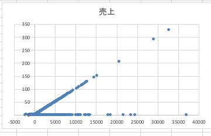
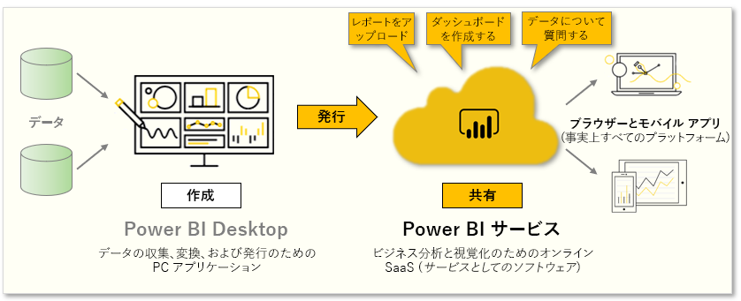
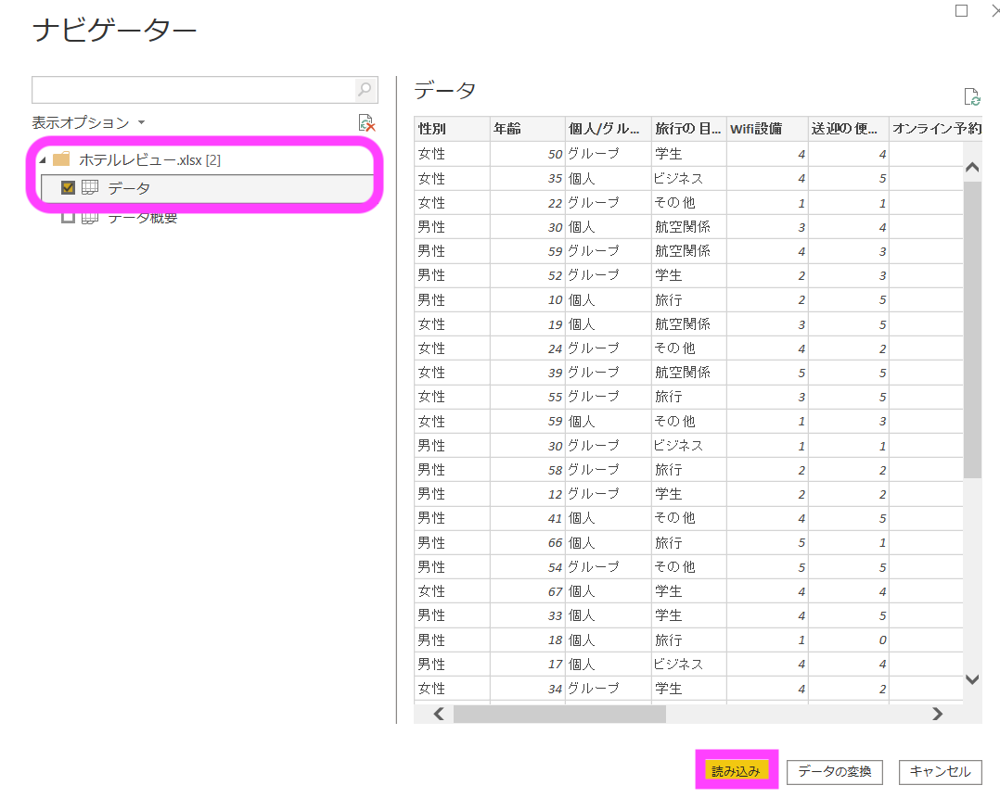
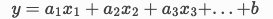

A(analysis、分析)：データに基づく分析、処理
多変量解析の基礎 - 相関と回帰分析
多変量解析（単変量解析を含む）では、予測・要因分析が可能です。つまり、データ間にある関係性を捉えることができます。更に良い点として、分析において重要な、ある変数にある変数がどのように影響しているのかを数値的に評価することができます。つまり、うまく解析を進めると変数の因果関係を読み取ることも可能なのです。
まとめると、多変量解析の手法では以下のような関係性を見つけることができます。また、数値で相対的に目的変数に対する影響度を比較することが可能です。（全ての多変量解析の手法がそうであるわけではありません。）
相関分析
相関分析とは文字通り、変数同士の相関を見る分析方法です。相関とは、互いに影響しあっているような状態または、関係の事を指します。
例えば、アイスの販売数と気温には、気温が上がればアイスが売れるという関係がありますが、これは相関のわかりやすい一例です。 相関分析を使用すると、関連性を相関係数という数値で定量的に評価することが可能です。つまり、相関分析とは、2 種類のデータの関係性の強さを、相関係数という数値で表す分析手法です。
相関分析の実装
下記について相関関係があるかどうかを調べます。
年齢と銀行残高の相関関係
売上と銀行残高の相関関係
 
相関係数をみる
可視化を行うことでおおよそ 2 つの変数の間に関連性があることが分かりました。 ですが現状は、確かにありそうであることは分かっても、「どれが最も関連性が強いですか？」という問いに回答できません。 つまりは相対的に比較ができる定量的な指標があればよいのですが、そこで相関係数が有効に用いることができます。
相関係数は、excelのデータ分析機能を使用して簡単に算出できます。 ここは、すべてのデータを使って確認します。（各満足度で絞ると、相関関数の計算の都合上、エラーとなってしまうためです）

相関の設定は下記のようにしてください。 
入力範囲 : データ全体 先頭行をラベルとして使用 : ☑
結果以下のような値が算出されていれば成功です。 
【発展】因果関係
例えば、先程例に挙げた「アイスの販売数と気温」であれば、アイスの販売数 ⇒ 気温の関係でなく、気温 ⇒ アイスの販売数の関係であることが分かります。ですが、「満足度と食事の満足度」ではどうでしょうか。食事の満足度 ⇒ 満足度の関係も、満足度 ⇒ 食事の満足度の関係もどちらも成立しそうです。
「宿泊したホテルの対応や内装の綺麗さなど、全体的な満足度が高かったため、食事も普段より美味しく感じた」というのも往々にして発生しそうだと想像できます。
また、上記のような例を「逆の相関関係」と呼んだりします。
重回帰分析
重回帰分析は複数の変数に対して分析を行うことが可能です。 扱う変数が複数であるため重回帰分析は多変量解析の手法です。
多変量解析で行えることは大きく分けて以下の 2 つです。
要因分析
予測分析
単回帰分析では、2 つの変数の関係性をモデルで表現するにとどまりますが、重回帰分析では複数の変数を扱えるようになるため、できることの幅が広がります。
重回帰分析のモデル式は以下のようになります。

y: 目的変数（結果）
x: 説明変数（原因）
a: 偏回帰係数
b: 切片
上式からも重回帰分析は単回帰分析の拡張版であり、 と の数が変数分だけ増えていることが分かります。また、単回帰分析の場合は、 を回帰分析とよんでいましたが、重回帰分析では、偏回帰係数と呼びます。
要因分析と予測分析
先程もお伝えしましたが、重回帰分析の使用用途は要因分析と予測分析に分かれます。
要因分析：複数ある要因（説明変数）のうち、目的変数に関連している度合いの大きいものを調べること
予測分析：要因分析を元に重回帰式を求めて未来の値を予測すること
単回帰分析では 1 対 1 の変数の関係を見ていたのに対し、重回帰分析では、1 対複数の変数の関係をみることになります。単回帰分析の回帰係数との違いとして、もともとのデータを上手く表現できている重回帰分析の偏回帰係数は、用いている複数の説明変数を考慮した上での目的変数に対するそれぞれの影響度合いが算出されています。
重回帰分析の実装
重回帰分析は変わる変数が複数になるため、単回帰分析のときのように簡単に可視化することができません。 よってこちらの実装は分析ツールを使用して行いましょう。
【分析に期待すること】 - 売上の高い→優良顧客の発見 - 成約はするが売上の低い顧客属性の発見
売上予測の重回帰モデルを作成して、売上の要因→成約の要因を探す 成約している人のみに注目し、売上に影響（成約）与える要因を探索する。
データ分析 → 「回帰分析」を選択します。
 「入力 Y の範囲」に売上 「入力 X の範囲」にその他の項目（変数）を選択します。
「入力 Y の範囲」に売上 「入力 X の範囲」にその他の項目（変数）を選択します。

画像のように設定ができたら OK ボタンを選択して、重回帰分析を実行しましょう。 分析の実装が完了すると下記のように実行結果が表示されます。

重回帰分析の結果の解釈
重回帰分析の結果の解釈を行います。
上図の注目すべき項目のみ着目して進めましょう。 回帰分析の結果の善し悪しを評価するものに、決定係数があります。決定係数は、モデルのデータに対する当てはまりの良さ（回帰式でデータをどの程度うまく表現できているか）を表す数値で、最大が 1 となります。 #### P 値 Excel での回帰分析では、係数や切片に対して p 値(両側検定の結果)という値が算出されます。先程確認したように、以下の組み合わせで仮説を立てて、検定という統計処理を行った結果算出される値です。p 値については、0 に近い値を取っていればよいというふうに取られておけば構いません。 ※ 検定については少し難解であるため、資料後半に入れています。
P 値が一定の値（一般に 5）を下回れば、説明変数は目的変数に対して影響を及ぼしていると主張できるようになります。
y =ax+b の場合、
帰無仮説：a = 0
対立仮説：a ≠ 0 #### T 値 先程の P 値は、説明変数が目的変数に影響しているか否かの判定には使用できますが、どの程度しているのかは判断できません。
重回帰分析の場合には t 値を使用することで、複数の変数の影響度合いを考慮し、どの説明変数が結果に最も影響しているのかなどを見ることが可能です。 t 値は偏回帰係数毎に算出されており、絶対値的に大きいほど目的変数に対する影響が大きいと判断します。また、t 値も目安の大きさがあり、t の絶対値が 2 より小さい場合は統計的にはその変数は目的変数に寄与しないと判断できます。」t値は個々の説明変数の有意性を判定するt検定で用いられる数値です
※ 別の方法として偏回帰係数をみて判断するという方法もあります。 #### 係数 係数は回帰式「Y = aX + b」のaやbの定数部分を表しています。 今回のケースでは、導き出された係数から以下の回帰式が算出されています。 この数値を見ることで、どの要素が目的変数に強い影響を与えているかがわかります。
※ いくつかの変数の後ろの「E-○」は、Eの前の数字×0.1 の○乗を指します。今のデータにおいては、とてつもなく小さな数字になることを押さえていれば問題ありません。
今回のデータはもともとの数値データが少なかったため、重回帰分析からではあまり大きな発見がありませんでした。とはいえ、売上の予測をしたり、需要予測・分析を行う際などに使用することが可能です。一つのテクニックとして抑えましょう。
項目名 |
説明 |
|---|---|
重相関R |
相関係数のこと。 |
標準誤差 |
得られた推定量そのもののばらつきのこと。 |
観測数 |
分析に使ったデータ数のこと。 |
回帰 |
回帰直線（式）のこと。 |
残差 |
推定された回帰式が求めた値と、実際のデータの値の差のこと。 |
自由度 |
自由に決めることができる値の数のこと。現時点では、有意Fを求めるために必要な値。回帰の場合は、変数の個数を指すことが多い。 |
変動 |
偏差の平方和のこと。偏差とは、データの個別の値から平均値を引いたもの。 |
観測された分散比 |
F値のこと。有意F に使用する値。F検定に用いる。 |
有意F |
すべての係数が 0 である確率のこと。0に近ければ近いほどよく、0.05未満なら統計的に「全ての係数が 0 ではない」言える。 |
下限95% |
95%の確率で係数が取りうる値の下限のこと。 |
上限95% |
95%の確率で係数が取りうる値の上限 |
Excel での機械学習分析の注意
Excel での分析には制限があります。下記に注意してください。 - 主な実装は重回帰分析のみ 成約の分析などを行う際には回帰ではなく分類の手法が好ましいです。ロジスティクス回帰や決定木はExcelではサポートされておりません。 - 変数の制限 Excelでの重回帰分析では入力変数は 16 変数までときまりがあります。 - データの数値化 数式にかけるため、データはすべて数値化を行う必要があります。本データは講師側ですでに数値化を行いましたが実務では数値がをする必要が発生します。
分析結果からの考察
まず、銀行残高・結婚状況が独身が絶対値 2 を越えているため、影響があることはあると言えそうです。 また、P 値は銀行残高とローンの有無が 0 に近い値を取っているため、関連性があると判断できます。
今回の分析はすべてのデータを使用できたわけではないため、下記を参考に再度、分析結果を考えて見ましょう。画像は、コードベースで分析を行った際の影響度を可視化したものです。

まとめ
重回帰分析の結果によって、売上に影響を与える要因として下記のようなことがわかります。
銀行残高・ローンの有無が売上の値と何かしらの関連がある
銀行残高と結婚状況が独身の方は売上に大きな影響がある
コードでの影響度を考慮した考察を食わける
すでにローンを持っていたり、起業家,自営業などの職業の人が成約後、預金金額（売上の）多い傾向にあることがわかった。
家政婦や無職の人は成約を行っても預金が少ない（売上が低い）ことがわかった。
補足
[ ]:
#銀行残高と成約の統計情報を確認する
b_df = pd.DataFrame()
b_df['銀行残高_yes'] = (data[data['成約の有無'] == 'yes'][['成約の有無','銀行残高']].describe())['銀行残高']
b_df['銀行残高_no'] = (data[data['成約の有無'] == 'no'][['成約の有無','銀行残高']].describe())['銀行残高']
b_df
| 銀行残高_yes | 銀行残高_no | |
|---|---|---|
| count | 5289.000000 | 5873.000000 |
| mean | 1804.267915 | 1280.227141 |
| std | 3501.104777 | 2933.411934 |
| min | -3058.000000 | -6847.000000 |
| 25% | 210.000000 | 64.000000 |
| 50% | 733.000000 | 414.000000 |
| 75% | 2159.000000 | 1324.000000 |
| max | 81204.000000 | 66653.000000 |
[ ]:
b_df.drop(['count', '25%', '50%', '75%']).plot.bar(title = 'Balance and deposit statistics')
<Axes: title={'center': 'Balance and deposit statistics'}>

[ ]:
# 年齢と成約の関係
a_df = pd.DataFrame()
a_df['年齢_yes'] = (data[data['成約の有無'] == 'yes'][['成約の有無','年齢']].describe())['年齢']
a_df['年齢_no'] = (data[data['成約の有無'] == 'no'][['成約の有無','年齢']].describe())['年齢']
a_df
| 年齢_yes | 年齢_no | |
|---|---|---|
| count | 5289.000000 | 5873.000000 |
| mean | 41.670070 | 40.837391 |
| std | 13.497781 | 10.264815 |
| min | 18.000000 | 18.000000 |
| 25% | 31.000000 | 33.000000 |
| 50% | 38.000000 | 39.000000 |
| 75% | 50.000000 | 48.000000 |
| max | 95.000000 | 89.000000 |
[ ]:
a_df.drop(['count', '25%', '50%', '75%']).plot.bar(title = 'Age and deposit statistics')
<Axes: title={'center': 'Age and deposit statistics'}>
定期預金を契約している人は、残高や年齢の値が大きい傾向があります
一次分析のまとめ
「ブルーカラー」や「サービス業」の仕事に就いている顧客は、定期預金を申し込む可能性が低いです。
既婚の顧客は定期預金を契約する可能性が低くなります。
定期預金している人は残高や年齢の値が大きい傾向がある。
仮説をたてて分析を行い統計的に証明する
以下の仮説を調べる - 結婚状況と成約の有無は関連性があるのではないか - 最も売上の良い営業と売上の最も引くい営業では営業力に差があるのではないか
カイ二乗検定を使用して関連性を証明する
[ ]:
# カイ二乗検定を実装し、成約率と最終学歴の関連性があるかどうか調べる
import pandas as pd
import scipy.stats as stats
contingency_table = pd.crosstab(data['結婚状況'], data['成約の有無'])
print(contingency_table.head())
chi2, p, _, _ = stats.chi2_contingency(contingency_table)
if p < 0.05:
print("結婚状況と定期預金加入の有無との間には、統計的に有意な関係がある。")
else:
print("結婚状況と定期預金加入の有無との間には、統計的に有意な関連は見られない。")
成約の有無 no yes
結婚状況
divorced 671 622
married 3596 2755
single 1606 1912
結婚状況と定期預金加入の有無との間には、統計的に有意な関係がある。
営業マンの力量をT検定する。
[ ]:
salse=data.groupby('担当営業マン')['売上'].mean()
salse.head()
担当営業マン
A 8.358587
B 8.838254
C 8.455569
D 8.409461
E 9.043657
Name: 売上, dtype: float64
[ ]:
# prompt: 営業マンごとの成約数の値をみる
salse2=data.groupby('担当営業マン')['成約の有無'].value_counts()
salse2.head(10)
担当営業マン 成約の有無
A no 1199
yes 1073
B no 1140
yes 1037
C no 1133
yes 1045
D no 1161
yes 1067
E no 1240
yes 1067
Name: count, dtype: int64
[ ]:
# テーブル化
salse2 = salse2.unstack(fill_value=0)
salse2.columns = ['no', 'yes']
salse2.head()
| no | yes | |
|---|---|---|
| 担当営業マン | ||
| A | 1199 | 1073 |
| B | 1140 | 1037 |
| C | 1133 | 1045 |
| D | 1161 | 1067 |
| E | 1240 | 1067 |
[ ]:
# prompt: salse2 とsalse テーブルを結合する
import pandas as pd
salse_merge = pd.merge(salse, salse2, on='担当営業マン')
salse_merge.head()
| 売上 | no | yes | |
|---|---|---|---|
| 担当営業マン | |||
| A | 8.358587 | 1199 | 1073 |
| B | 8.838254 | 1140 | 1037 |
| C | 8.455569 | 1133 | 1045 |
| D | 8.409461 | 1161 | 1067 |
| E | 9.043657 | 1240 | 1067 |
[ ]:
salse_merge.columns
Index(['売上', 'no', 'yes'], dtype='object')
[ ]:
salse_merge.reset_index(inplace=True)
[ ]:
salse_merge.head()
| 担当営業マン | 売上 | no | yes | |
|---|---|---|---|---|
| 0 | A | 8.358587 | 1199 | 1073 |
| 1 | B | 8.838254 | 1140 | 1037 |
| 2 | C | 8.455569 | 1133 | 1045 |
| 3 | D | 8.409461 | 1161 | 1067 |
| 4 | E | 9.043657 | 1240 | 1067 |
[ ]:
salse_merge.columns
Index(['担当営業マン', '売上', 'no', 'yes'], dtype='object')
キャンペーンを売っていないときと今回のデータを使用してT検定を行います。 今回のキャンペーンが効果があったと言えるかどうかを検定を行い検証しましょうｌ．
[ ]:
import pandas as pd
import numpy as np
# 乱数のシードを設定して再現性を保つ
np.random.seed(42)
# サンプルサイズ
n = 1000
# 年齢データを作成（18歳から95歳までの乱数）
age = np.random.randint(18, 96, n)
# 職業データを作成（'admin.', 'blue-collar', 'technician', 'services', 'management', 'retired', 'entrepreneur', 'self-employed', 'housemaid', 'unemployed', 'student', 'unknown'）
occupations = ['admin.', 'blue-collar', 'technician', 'services', 'management', 'retired', 'entrepreneur', 'self-employed', 'housemaid', 'unemployed', 'student', 'unknown']
occupation = np.random.choice(occupations, n)
# 婚姻状態データを作成（'married', 'single', 'divorced', 'unknown'）
marital_statuses = ['married', 'single', 'divorced', 'unknown']
marital_status = np.random.choice(marital_statuses, n)
# 学歴データを作成（'basic.4y', 'basic.6y', 'basic.9y', 'high.school', 'professional.course', 'university.degree', 'unknown'）
educations = ['basic.4y', 'basic.6y', 'basic.9y', 'high.school', 'professional.course', 'university.degree', 'unknown']
education = np.random.choice(educations, n)
# デフォルト情報データを作成（'yes', 'no', 'unknown'）
defaults = ['yes', 'no', 'unknown']
default = np.random.choice(defaults, n)
# 住宅ローンデータを作成（'yes', 'no', 'unknown'）
housings = ['yes', 'no', 'unknown']
housing = np.random.choice(housings, n)
# 個人ローンデータを作成（'yes', 'no', 'unknown'）
loans = ['yes', 'no', 'unknown']
loan = np.random.choice(loans, n)
# 連絡方法データを作成（'telephone', 'cellular'）
contacts = ['telephone', 'cellular']
contact = np.random.choice(contacts, n)
# 連絡時間データを作成（'jan', 'feb', 'mar', 'apr', 'may', 'jun', 'jul', 'aug', 'sep', 'oct', 'nov', 'dec'）
months = ['jan', 'feb', 'mar', 'apr', 'may', 'jun', 'jul', 'aug', 'sep', 'oct', 'nov', 'dec']
month = np.random.choice(months, n)
# 連絡曜日データを作成（'mon', 'tue', 'wed', 'thu', 'fri'）
days = ['mon', 'tue', 'wed', 'thu', 'fri']
day_of_week = np.random.choice(days, n)
# 最後の接触からの日数データを作成（0から365までの乱数）
campaign = np.random.randint(0, 366, n)
# 最後の接触回数データを作成（0から10までの乱数）
pdays = np.random.randint(0, 11, n)
# 前回のキャンペーン後の結果データを作成（0から7までの乱数）
previous = np.random.randint(0, 8, n)
# 通知の結果データを作成（'failure', 'nonexistent', 'success'）
poutcomes = ['failure', 'nonexistent', 'success']
poutcome = np.random.choice(poutcomes, n)
# 顧客の年間連絡回数データを作成（-3.4から1.4までの乱数）
emp_var_rate = np.random.uniform(-3.4, 1.4, n)
# 消費者物価指数データを作成（92から95までの乱数）
cons_price_idx = np.random.uniform(92, 95, n)
# 消費者信頼感指数データを作成（-50から-25までの乱数）
cons_conf_idx = np.random.uniform(-50, -25, n)
# 雇用者の雇用指数データを作成（0.6から5.0までの乱数）
euribor3m = np.random.uniform(0.6, 5.0, n)
# サポートされている連絡データを作成（4900から5200までの乱数）
nr_employed = np.random.randint(4900, 5201, n)
# 最終的な購入の結果データを作成（'yes', 'no'）
y_values = ['yes', 'no']
y = np.random.choice(y_values, n)
# データフレームを作成
data = pd.DataFrame({
'age': age,
'job': occupation,
'marital': marital_status,
'education': education,
'default': default,
'housing': housing,
'loan': loan,
'contact': contact,
'month': month,
'day_of_week': day_of_week,
'campaign': campaign,
'pdays': pdays,
'previous': previous,
'poutcome': poutcome,
'emp.var.rate': emp_var_rate,
'cons.price.idx': cons_price_idx,
'cons.conf.idx': cons_conf_idx,
'euribor3m': euribor3m,
'nr.employed': nr_employed,
'y': y
})
data.head()
[ ]:
# prompt: data テーブルの営業マン列のAとEで売上に差があるかどうか検定
import scipy.stats as stats
# 帰無仮説：AとEの売上には差がない（差があるとはいえない）
# 対立仮説：AとEの売上には差がある
# AとEの売上を抽出
a_sales = data[data['担当営業マン'] == 'A']['売上']
e_sales = data[data['担当営業マン'] == 'E']['売上']
# 二標本t検定の実行
t_stat, p_value = stats.ttest_ind(a_sales, e_sales)
# 有意水準α=0.05で検定
if p_value < 0.05:
print('AとEの売上には差がある')
else:
print('AとEの売上には差がない')
print(t_stat)
print(p_value)
AとEの売上には差がない
-0.8582443340668331
0.39080249077419926
売上の最も高たったEと低かったAさんでは差がないということが言えないということが検定結果からわかります。営業マンによる成約率の上下はあまりなさそうです。
相関分析
年齢が上がるほど、銀行残高が上がるのかどうか相関関係を分析する
[ ]:
import pandas as pd
# 数値データのみを抽出
numerical_data = data.select_dtypes(include=['int64', 'float64'])
numerical_data.drop(['列1','連絡で接触した時間（秒数'], axis=1, inplace=True)
# 相関分析の実行
correlation_matrix = numerical_data.corr()
# ,'Unnamed: 18','Unnamed: 19'
# データフレームに変換
correlation_df = pd.DataFrame(correlation_matrix)
# 相関分析の結果を表示
print(correlation_df)
年齢 銀行残高 day pdays previous 売上
年齢 1.000000 0.112300 -0.000762 0.002774 0.020169 0.101262
銀行残高 0.112300 1.000000 0.010467 0.017411 0.030805 0.727254
day -0.000762 0.010467 1.000000 -0.077232 -0.058981 -0.011110
pdays 0.002774 0.017411 -0.077232 1.000000 0.507272 0.060419
previous 0.020169 0.030805 -0.058981 0.507272 1.000000 0.063562
売上 0.101262 0.727254 -0.011110 0.060419 0.063562 1.000000
年齢と銀行残高に相関関係はなさそう。
売上と銀行残高には相関関係がある
因果関係について 因果関係とは、相関分析は非常に強力な手法ですが、これにはいくつか注意点があります。相関は 2 つの変数間に因果関係があれば強く出ます。ここに注目すべき点があり、相関はお互いの影響度合いを見ている点には注意が必要です。
たまたま相関がある場合に注意しましょう。このような本当は関係はないが、相関があるように結果が出てしまうことを擬似相関（見せかけの相関）と言います。
この疑似相関は様々な要因で発生する可能性があります。
関係は全く無いが相関が発生する場合 第 3 の要因が 2 変数それぞれに影響している場合 第 3 の要因が 2 変数の間に介在している場合 関係は全く無いが相関が発生する場合
具体例を用いて考えてみましょう。
じゃがいもの生産量と自民党の支持率には正の相関があると言われています。この、じゃがいもの生産量と自民党の支持率には何かの因果関係が存在するのでしょうか。
回答としては No です。ここにはたまたま相関が見つかっていますが、何かの理由（因果関係）があるわけではありません。
第 3 の要因が 2 変数それぞれに影響している場合
学力テストの結果と身長には正の相関があると言われています。このとき、この 2 つには因果関係が存在するのでしょうか。
回答としては No だと分かります。実は、身長・テストの点数には、第 3 の要因となる「年齢」が紐付いています。つまり、年齢（C） ⇒ 身長（A）、年齢（C） ⇒ テストの点数（B）の様な関係性になっているのです。
また、今回の年齢（C）の様な要因を交絡因子と呼びます。
第 3 の要因が 2 変数の間に介在している場合
実は、「ウォーキングをすると体重が増える」には相関があるのですが、これも相関を使用して説明ができます。もちろんこれには直接的な因果関係はなく、ウォーキングをする（A） ⇒ 空腹から過剰に食べる（C） ⇒ 体重が増える（B）という関係になっています。
実際には因果関係がないものでも相関が出てしまい、因果関係があるように見えてしまうことが多々あります。これを解決する方法は様々あるのですが、第一に疑う姿勢を持つことを大切にしましょう。
メモ：受講者にも演習として検定を行っていただく。
機械学習を行い分析を行う
重回帰分析は複数の変数に対して分析を行うことが可能です。 扱う変数が複数であるため重回帰分析は多変量解析の手法です。
多変量解析で行えることは大きく分けて以下の 2 つです。
要因分析
予測分析
単回帰分析では、2 つの変数の関係性をモデルで表現するにとどまっていましたが、重回帰分析では複数の変数を扱えるようになるため、できることの幅が広がります。
- 重回帰分析のモデル式は以下のようになります。
目的変数（結果）
説明変数（原因）
偏回帰係数
切片
上式からも重回帰分析は単回帰分析の拡張版であり、 と の数が変数分だけ増えていることが分かります。また、単回帰分析の場合は、 を回帰分析とよんでいましたが、重回帰分析では、偏回帰係数と呼びます。
要因分析と予測分析 先程もお伝えしましたが、重回帰分析の使用用途は要因分析と予測分析に分かれます。
要因分析：複数ある要因（説明変数）のうち、目的変数に関連している度合いの大きいものを調べること
予測分析：要因分析を元に重回帰式を求めて未来の値を予測すること
単回帰分析では 1 対 1 の変数の関係を見ていたのに対し、重回帰分析では、1 対複数の変数の関係をみることになります。単回帰分析の回帰係数との違いとして、もともとのデータを上手く表現できている重回帰分析の偏回帰係数は、用いている複数の説明変数を考慮した上での目的変数に対するそれぞれの影響度合いが算出されています。
重回帰分析の実装 重回帰分析は変わる変数が複数になるため、単回帰分析のときのように簡単に可視化することができません。 よってこちらの実装は分析ツールを使用して行いましょう。 データ分析 → 「回帰分析」を選択します。
「入力 Y の範囲」に満足度 「入力 X の範囲」にその他の項目（変数）を選択します。 17 すると以下のように算出されているはずです。
期待すること - 売上の高い→優良顧客の発見 - 成約はするが売上の低い顧客属性の発見
売上予測の重回帰モデルを作成して、売上の要因→成約の要因を探す 成約している人のみに注目し、売上に影響（成約）与える要因を探索する。
重回帰分析の結果の解釈
重回帰分析の結果の解釈を行います。 上図の注目すべき項目のみ着目して進めましょう。 回帰分析の結果の善し悪しを評価するものに、決定係数があります。決定係数は、モデルのデータに対する当てはまりの良さ（回帰式でデータをどの程度うまく表現できているか）を表す数値で、最大が 1 となります。
Excel での回帰分析では、係数や切片に対して p 値(両側検定の結果)という値が算出されます。先程確認したように、以下の組み合わせで仮説を立てて、検定という統計処理を行った結果算出される値です。p 値については、0 に近い値を取っていればよいというふうに取られておけば構いません。 ※ 検定については少し難解であるため、資料後半に入れています。
P 値が一定の値（一般に 5）を下回れば、説明変数は目的変数に対して影響を及ぼしていると主張できるようになります。
の場合、
帰無仮説：a = 0
対立仮説：a ≠ 0
先程の P 値は、説明変数が目的変数に影響しているか否かの判定には使用できますが、どの程度しているのかは判断できません。 重回帰分析の場合には t 値を使用することで、複数の変数の影響度合いを考慮し、どの説明変数が結果に最も影響しているのかなどを見ることが可能です。 t 値は偏回帰係数毎に算出されており、絶対値的に大きいほど目的変数に対する影響が大きいと判断します。 また、t 値も目安の大きさがあり、t の絶対値が 2 より小さい場合は統計的にはその変数は目的変数に寄与しないと判断できます。
※ 別の方法として偏回帰係数をみて判断するという方法もあります。
結果の解釈 - 要因分析 まず、すべての変数が絶対値 2 を越えているため、影響があることはあると言えそうです。 また、P 値も、すべて 5% を下回っているので、関連性があると判断できます。
※ いくつかの変数の後ろの「E-○」は、Eの前の数字×0.1 の○乗を指します。今のデータにおいては、とてつもなく小さな数字になることを押さえていれば問題ありません。
よって、ここから以下が考えられます。
年齢以外のすべての変数は満足度に影響を与えている。逆に、年齢との関係については別の観点から考えられそうだ。
特に、いままで見てきた 3つの変数が特に影響を与えている。
「その他のサービス」や「食事の満足度」に関しても考える必要があるかもしれない。
[ ]:
# prompt: data から文字列の列を抽出してください
string_cols = data.select_dtypes(include='object').columns.tolist()
print(string_cols)
['仕事', '結婚状況', '最終学歴', '債務不履行の有無', '持ち家の有無', 'ローンの有無', '客へ最後に連絡した際の連絡手段', 'month', '成約の有無', '担当営業マン']
[ ]:
data.head()
| 列1 | 年齢 | 仕事 | 結婚状況 | 最終学歴 | 債務不履行の有無 | 銀行残高 | 持ち家の有無 | ローンの有無 | 客へ最後に連絡した際の連絡手段 | day | month | 連絡で接触した時間（秒数 | pdays | previous | 成約の有無 | 担当営業マン | 売上 | |
|---|---|---|---|---|---|---|---|---|---|---|---|---|---|---|---|---|---|---|
| 0 | 0.0 | 59.0 | admin. | married | secondary | no | 2343.0 | yes | no | unknown | 5.0 | may | 1042.0 | -1.0 | 0.0 | yes | B | 23.43 |
| 1 | 1.0 | 56.0 | admin. | married | secondary | no | 45.0 | no | no | unknown | 5.0 | may | 1467.0 | -1.0 | 0.0 | yes | E | 0.45 |
| 2 | 2.0 | 41.0 | technician | married | secondary | no | 1270.0 | yes | no | unknown | 5.0 | may | 1389.0 | -1.0 | 0.0 | yes | A | 12.70 |
| 3 | 3.0 | 55.0 | services | married | secondary | no | 2476.0 | yes | no | unknown | 5.0 | may | 579.0 | -1.0 | 0.0 | yes | D | 24.76 |
| 4 | 4.0 | 54.0 | admin. | married | tertiary | no | 184.0 | no | no | unknown | 5.0 | may | 673.0 | -1.0 | 0.0 | yes | E | 1.84 |
二値の値はラベルエンコーディング
[ ]:
# カテゴリカル変数を含んだデータのみを抽出
df_obj = data.select_dtypes(include='object')
df_obj.head(3)
| 仕事 | 結婚状況 | 最終学歴 | 債務不履行の有無 | 持ち家の有無 | ローンの有無 | 客へ最後に連絡した際の連絡手段 | month | 成約の有無 | 担当営業マン | |
|---|---|---|---|---|---|---|---|---|---|---|
| 0 | admin. | married | secondary | no | yes | no | unknown | may | yes | B |
| 1 | admin. | married | secondary | no | no | no | unknown | may | yes | E |
| 2 | technician | married | secondary | no | yes | no | unknown | may | yes | A |
[ ]:
df_uni = df_obj.nunique()
df_uni
仕事 12
結婚状況 3
最終学歴 4
債務不履行の有無 2
持ち家の有無 2
ローンの有無 2
客へ最後に連絡した際の連絡手段 3
month 12
成約の有無 2
担当営業マン 5
dtype: int64
[ ]:
# モデルの宣言
from sklearn.preprocessing import LabelEncoder
le = LabelEncoder()
[ ]:
# ユニークな値が 2 種類の列名のみ取得
df_cols = df_uni[df_uni == 2].index
df_cols
Index(['債務不履行の有無', '持ち家の有無', 'ローンの有無', '成約の有無'], dtype='object')
[ ]:
for col in df_cols:
le = LabelEncoder()
le.fit(data[col])
data[col] = le.transform(data[col])
[ ]:
data.head()
| 列1 | 年齢 | 仕事 | 結婚状況 | 最終学歴 | 債務不履行の有無 | 銀行残高 | 持ち家の有無 | ローンの有無 | 客へ最後に連絡した際の連絡手段 | day | month | 連絡で接触した時間（秒数 | pdays | previous | 成約の有無 | 担当営業マン | 売上 | |
|---|---|---|---|---|---|---|---|---|---|---|---|---|---|---|---|---|---|---|
| 0 | 0.0 | 59.0 | admin. | married | secondary | 0 | 2343.0 | 1 | 0 | unknown | 5.0 | may | 1042.0 | -1.0 | 0.0 | 1 | B | 23.43 |
| 1 | 1.0 | 56.0 | admin. | married | secondary | 0 | 45.0 | 0 | 0 | unknown | 5.0 | may | 1467.0 | -1.0 | 0.0 | 1 | E | 0.45 |
| 2 | 2.0 | 41.0 | technician | married | secondary | 0 | 1270.0 | 1 | 0 | unknown | 5.0 | may | 1389.0 | -1.0 | 0.0 | 1 | A | 12.70 |
| 3 | 3.0 | 55.0 | services | married | secondary | 0 | 2476.0 | 1 | 0 | unknown | 5.0 | may | 579.0 | -1.0 | 0.0 | 1 | D | 24.76 |
| 4 | 4.0 | 54.0 | admin. | married | tertiary | 0 | 184.0 | 0 | 0 | unknown | 5.0 | may | 673.0 | -1.0 | 0.0 | 1 | E | 1.84 |
[ ]:
data.drop(['列1'], axis=1, inplace=True)
[ ]:
data.head()
| 年齢 | 仕事 | 結婚状況 | 最終学歴 | 債務不履行の有無 | 銀行残高 | 持ち家の有無 | ローンの有無 | 客へ最後に連絡した際の連絡手段 | day | month | 連絡で接触した時間（秒数 | pdays | previous | 成約の有無 | 担当営業マン | 売上 | |
|---|---|---|---|---|---|---|---|---|---|---|---|---|---|---|---|---|---|
| 0 | 59.0 | admin. | married | secondary | 0 | 2343.0 | 1 | 0 | unknown | 5.0 | may | 1042.0 | -1.0 | 0.0 | 1 | B | 23.43 |
| 1 | 56.0 | admin. | married | secondary | 0 | 45.0 | 0 | 0 | unknown | 5.0 | may | 1467.0 | -1.0 | 0.0 | 1 | E | 0.45 |
| 2 | 41.0 | technician | married | secondary | 0 | 1270.0 | 1 | 0 | unknown | 5.0 | may | 1389.0 | -1.0 | 0.0 | 1 | A | 12.70 |
| 3 | 55.0 | services | married | secondary | 0 | 2476.0 | 1 | 0 | unknown | 5.0 | may | 579.0 | -1.0 | 0.0 | 1 | D | 24.76 |
| 4 | 54.0 | admin. | married | tertiary | 0 | 184.0 | 0 | 0 | unknown | 5.0 | may | 673.0 | -1.0 | 0.0 | 1 | E | 1.84 |
[ ]:
data.drop(['previous','pdays','債務不履行の有無','連絡で接触した時間（秒数','month','担当営業マン','客へ最後に連絡した際の連絡手段'], axis=1, inplace=True)
# 'Unnamed: 18','Unnamed: 19','Unnamed: 20'
[ ]:
mldata = pd.get_dummies(data)
[ ]:
mldata.shape
(11165, 26)
[ ]:
mldata.head()
| 年齢 | 銀行残高 | 持ち家の有無 | ローンの有無 | day | 成約の有無 | 売上 | 仕事_admin. | 仕事_blue-collar | 仕事_entrepreneur | ... | 仕事_technician | 仕事_unemployed | 仕事_unknown | 結婚状況_divorced | 結婚状況_married | 結婚状況_single | 最終学歴_primary | 最終学歴_secondary | 最終学歴_tertiary | 最終学歴_unknown | |
|---|---|---|---|---|---|---|---|---|---|---|---|---|---|---|---|---|---|---|---|---|---|
| 0 | 59.0 | 2343.0 | 1 | 0 | 5.0 | 1 | 23.43 | True | False | False | ... | False | False | False | False | True | False | False | True | False | False |
| 1 | 56.0 | 45.0 | 0 | 0 | 5.0 | 1 | 0.45 | True | False | False | ... | False | False | False | False | True | False | False | True | False | False |
| 2 | 41.0 | 1270.0 | 1 | 0 | 5.0 | 1 | 12.70 | False | False | False | ... | True | False | False | False | True | False | False | True | False | False |
| 3 | 55.0 | 2476.0 | 1 | 0 | 5.0 | 1 | 24.76 | False | False | False | ... | False | False | False | False | True | False | False | True | False | False |
| 4 | 54.0 | 184.0 | 0 | 0 | 5.0 | 1 | 1.84 | True | False | False | ... | False | False | False | False | True | False | False | False | True | False |
5 rows × 26 columns
[ ]:
# 欠損値の数を確認
mldata.isnull().sum()
年齢 3
銀行残高 3
持ち家の有無 0
ローンの有無 0
day 3
成約の有無 0
売上 0
仕事_admin. 0
仕事_blue-collar 0
仕事_entrepreneur 0
仕事_housemaid 0
仕事_management 0
仕事_retired 0
仕事_self-employed 0
仕事_services 0
仕事_student 0
仕事_technician 0
仕事_unemployed 0
仕事_unknown 0
結婚状況_divorced 0
結婚状況_married 0
結婚状況_single 0
最終学歴_primary 0
最終学歴_secondary 0
最終学歴_tertiary 0
最終学歴_unknown 0
dtype: int64
[ ]:
mldata= mldata.dropna()
mldata.isnull().sum()
年齢 0
銀行残高 0
持ち家の有無 0
ローンの有無 0
day 0
成約の有無 0
売上 0
仕事_admin. 0
仕事_blue-collar 0
仕事_entrepreneur 0
仕事_housemaid 0
仕事_management 0
仕事_retired 0
仕事_self-employed 0
仕事_services 0
仕事_student 0
仕事_technician 0
仕事_unemployed 0
仕事_unknown 0
結婚状況_divorced 0
結婚状況_married 0
結婚状況_single 0
最終学歴_primary 0
最終学歴_secondary 0
最終学歴_tertiary 0
最終学歴_unknown 0
dtype: int64
[ ]:
# prompt: mldata からNaN
mldata[mldata.isnull().any(axis=1)]
| 年齢 | 銀行残高 | 持ち家の有無 | ローンの有無 | day | 成約の有無 | 売上 | 仕事_admin. | 仕事_blue-collar | 仕事_entrepreneur | ... | 仕事_technician | 仕事_unemployed | 仕事_unknown | 結婚状況_divorced | 結婚状況_married | 結婚状況_single | 最終学歴_primary | 最終学歴_secondary | 最終学歴_tertiary | 最終学歴_unknown |
|---|
0 rows × 26 columns
[ ]:
# prompt: 成約の有無列がyesだけのデータを取得
mldata.head()
| 年齢 | 銀行残高 | 持ち家の有無 | ローンの有無 | day | 成約の有無 | 売上 | 仕事_admin. | 仕事_blue-collar | 仕事_entrepreneur | ... | 仕事_technician | 仕事_unemployed | 仕事_unknown | 結婚状況_divorced | 結婚状況_married | 結婚状況_single | 最終学歴_primary | 最終学歴_secondary | 最終学歴_tertiary | 最終学歴_unknown | |
|---|---|---|---|---|---|---|---|---|---|---|---|---|---|---|---|---|---|---|---|---|---|
| 0 | 59.0 | 2343.0 | 1 | 0 | 5.0 | 1 | 23.43 | True | False | False | ... | False | False | False | False | True | False | False | True | False | False |
| 1 | 56.0 | 45.0 | 0 | 0 | 5.0 | 1 | 0.45 | True | False | False | ... | False | False | False | False | True | False | False | True | False | False |
| 2 | 41.0 | 1270.0 | 1 | 0 | 5.0 | 1 | 12.70 | False | False | False | ... | True | False | False | False | True | False | False | True | False | False |
| 3 | 55.0 | 2476.0 | 1 | 0 | 5.0 | 1 | 24.76 | False | False | False | ... | False | False | False | False | True | False | False | True | False | False |
| 4 | 54.0 | 184.0 | 0 | 0 | 5.0 | 1 | 1.84 | True | False | False | ... | False | False | False | False | True | False | False | False | True | False |
5 rows × 26 columns
[ ]:
# prompt: mldata の成約の有無が1のデータを取り出し
mldata_yes = mldata[mldata['成約の有無'] == 1]
mldata_yes.head()
| 年齢 | 銀行残高 | 持ち家の有無 | ローンの有無 | day | 成約の有無 | 売上 | 仕事_admin. | 仕事_blue-collar | 仕事_entrepreneur | ... | 仕事_technician | 仕事_unemployed | 仕事_unknown | 結婚状況_divorced | 結婚状況_married | 結婚状況_single | 最終学歴_primary | 最終学歴_secondary | 最終学歴_tertiary | 最終学歴_unknown | |
|---|---|---|---|---|---|---|---|---|---|---|---|---|---|---|---|---|---|---|---|---|---|
| 0 | 59.0 | 2343.0 | 1 | 0 | 5.0 | 1 | 23.43 | True | False | False | ... | False | False | False | False | True | False | False | True | False | False |
| 1 | 56.0 | 45.0 | 0 | 0 | 5.0 | 1 | 0.45 | True | False | False | ... | False | False | False | False | True | False | False | True | False | False |
| 2 | 41.0 | 1270.0 | 1 | 0 | 5.0 | 1 | 12.70 | False | False | False | ... | True | False | False | False | True | False | False | True | False | False |
| 3 | 55.0 | 2476.0 | 1 | 0 | 5.0 | 1 | 24.76 | False | False | False | ... | False | False | False | False | True | False | False | True | False | False |
| 4 | 54.0 | 184.0 | 0 | 0 | 5.0 | 1 | 1.84 | True | False | False | ... | False | False | False | False | True | False | False | False | True | False |
5 rows × 26 columns
重回帰分析
重回帰分析を行い、売上に影響力のある特徴を算出する
[ ]:
from re import X
x = mldata_yes.drop(columns = ['売上','成約の有無']).values
t = mldata_yes[['売上']].values
[ ]:
from sklearn.metrics import r2_score, mean_absolute_error,mean_squared_error
from sklearn.preprocessing import StandardScaler
std_scaler = StandardScaler()
std_scaler.fit(x)
# 標準化
x_train_std = std_scaler.transform(x)
# x_test_std = std_scaler.transform(x_test)
# モデルの宣言
from sklearn.linear_model import LinearRegression
model = LinearRegression()
model.fit(x, t,)
pred_y = model.predict(x)
# モデルの検証
print('決定係数（r2）:{}'.format(round(r2_score(t, pred_y),3)))
print('平均誤差（MAE）:{}'.format(round(mean_absolute_error(t, pred_y),3)))
print('平均二乗偏差(RMSE):{}'.format(round(np.sqrt(mean_squared_error(t, pred_y)),3)))
決定係数（r2）:0.999
平均誤差（MAE）:0.322
平均二乗偏差(RMSE):0.999
[ ]:
model.coef_
array([[ 0.00053038, 0.0099747 , 0.23074688, 0.45746109, -0.00058006,
-0.06684301, -0.0075477 , 0.30136415, -0.1284604 , -0.0705586 ,
-0.01391888, 0.15260955, 0.05611743, -0.0738067 , 0.01946247,
-0.1068266 , -0.06159173, 0.05494255, -0.04260205, -0.01234051,
0.05797679, 0.00055555, -0.01971352, -0.03881882]])
[ ]:
# prompt: model の重みを可視化してください。
import pandas as pd
import matplotlib.pyplot as plt
coefs = model.coef_.tolist()[0]
# Create a list of column names
column_names = mldata_yes.drop(columns=['売上', '成約の有無']).columns.tolist()
# Create a DataFrame with the column names and coefficients
coef_df = pd.DataFrame({'Column Name': column_names, 'Coefficient': coefs})
# Sort the DataFrame by the coefficient values
coef_df = coef_df.sort_values(by='Coefficient', ascending=False)
# Plot the coefficients
plt.figure(figsize=(10, 6))
sns.barplot(x='Coefficient', y='Column Name', data=coef_df)
plt.title('Model Coefficients')
plt.xlabel('Coefficient Value')
plt.ylabel('Column Name')
plt.show()

すでにローンを持っていたり、起業家,自営業などの職業の人が成約後、預金金額（売上の）多い傾向にあることがわかった。
起業家、自営業の成約率は高くない
Retired は成約率は高いが売上はあまり上がらない（成約してもそこまで預金しない）ことがわかった。
家政婦や無職の人は成約を行っても預金が少ない（売上が低い）ことがわかった。
高度な分析の実装（決定木＆XG_Boost を実装）→Excelで実装できないため講座の最後におみせする
高度な分析を行い、成約に影響力の高い特徴を調べる
[ ]:
# 決定木
from sklearn.tree import DecisionTreeClassifier
from sklearn.metrics import accuracy_score
# データの用意
X = mldata.drop(['成約の有無','売上'], axis=1)
y = mldata['成約の有無']
# モデルの宣言
model = DecisionTreeClassifier(max_depth=7,min_samples_split=842)
# モデルの学習
model.fit(X, y)
# モデルの予測
y_pred = model.predict(X)
# モデルの評価
accuracy = accuracy_score(y, y_pred)
print('Accuracy:', accuracy)
# 決定木の可視化
import matplotlib.pyplot as plt
from sklearn.tree import plot_tree
plt.figure(figsize=(15, 10))
plot_tree(model, feature_names=X.columns, class_names=['no', 'yes'], fontsize=10, filled=True)
plt.show()
Accuracy: 0.6516753270023293
[ ]:
!pip install optuna
Collecting optuna
Downloading optuna-3.6.1-py3-none-any.whl (380 kB)
━━━━━━━━━━━━━━━━━━━━━━━━━━━━━━━━━━━━━━━━ 380.1/380.1 kB 4.9 MB/s eta 0:00:00
Collecting alembic>=1.5.0 (from optuna)
Downloading alembic-1.13.1-py3-none-any.whl (233 kB)
━━━━━━━━━━━━━━━━━━━━━━━━━━━━━━━━━━━━━━━━ 233.4/233.4 kB 10.9 MB/s eta 0:00:00
Collecting colorlog (from optuna)
Downloading colorlog-6.8.2-py3-none-any.whl (11 kB)
Requirement already satisfied: numpy in /usr/local/lib/python3.10/dist-packages (from optuna) (1.25.2)
Requirement already satisfied: packaging>=20.0 in /usr/local/lib/python3.10/dist-packages (from optuna) (24.0)
Requirement already satisfied: sqlalchemy>=1.3.0 in /usr/local/lib/python3.10/dist-packages (from optuna) (2.0.29)
Requirement already satisfied: tqdm in /usr/local/lib/python3.10/dist-packages (from optuna) (4.66.2)
Requirement already satisfied: PyYAML in /usr/local/lib/python3.10/dist-packages (from optuna) (6.0.1)
Collecting Mako (from alembic>=1.5.0->optuna)
Downloading Mako-1.3.3-py3-none-any.whl (78 kB)
━━━━━━━━━━━━━━━━━━━━━━━━━━━━━━━━━━━━━━━━ 78.8/78.8 kB 8.1 MB/s eta 0:00:00
Requirement already satisfied: typing-extensions>=4 in /usr/local/lib/python3.10/dist-packages (from alembic>=1.5.0->optuna) (4.11.0)
Requirement already satisfied: greenlet!=0.4.17 in /usr/local/lib/python3.10/dist-packages (from sqlalchemy>=1.3.0->optuna) (3.0.3)
Requirement already satisfied: MarkupSafe>=0.9.2 in /usr/local/lib/python3.10/dist-packages (from Mako->alembic>=1.5.0->optuna) (2.1.5)
Installing collected packages: Mako, colorlog, alembic, optuna
Successfully installed Mako-1.3.3 alembic-1.13.1 colorlog-6.8.2 optuna-3.6.1
[ ]:
# Optuna で探索
from sklearn.model_selection import train_test_split #split
x_train, x_test, y_train, y_test = train_test_split(X, y, test_size = 0.3, random_state=1)
import optuna
import xgboost
def objective(trial):
params = {
'n_estimators': trial.suggest_int('n_estimators', 10, 100),
'gamma': trial.suggest_loguniform('gamma', 1, 100),
'max_depth': trial.suggest_int('max_depth', 3, 50),
}
model = xgboost.XGBClassifier(**params)
model.fit(X, y)
y_pred = model.predict(X)
accuracy = accuracy_score(y, y_pred)
return 1 - accuracy
study = optuna.create_study(direction='minimize')
study.optimize(objective, n_trials=200)
best_params = study.best_params
print('Best Parameters:', best_params)
[I 2024-04-12 01:25:54,588] A new study created in memory with name: no-name-8c8f9ac9-7f8a-4ac8-bc2d-6e45890a932c
<ipython-input-105-a60ca129bc7b>:11: FutureWarning: suggest_loguniform has been deprecated in v3.0.0. This feature will be removed in v6.0.0. See https://github.com/optuna/optuna/releases/tag/v3.0.0. Use suggest_float(..., log=True) instead.
'gamma': trial.suggest_loguniform('gamma', 1, 100),
[I 2024-04-12 01:25:57,449] Trial 0 finished with value: 0.10553664217882097 and parameters: {'n_estimators': 55, 'gamma': 1.0796799191483775, 'max_depth': 28}. Best is trial 0 with value: 0.10553664217882097.
<ipython-input-105-a60ca129bc7b>:11: FutureWarning: suggest_loguniform has been deprecated in v3.0.0. This feature will be removed in v6.0.0. See https://github.com/optuna/optuna/releases/tag/v3.0.0. Use suggest_float(..., log=True) instead.
'gamma': trial.suggest_loguniform('gamma', 1, 100),
[I 2024-04-12 01:25:58,531] Trial 1 finished with value: 0.3297796093889984 and parameters: {'n_estimators': 11, 'gamma': 9.48990367707886, 'max_depth': 11}. Best is trial 0 with value: 0.10553664217882097.
<ipython-input-105-a60ca129bc7b>:11: FutureWarning: suggest_loguniform has been deprecated in v3.0.0. This feature will be removed in v6.0.0. See https://github.com/optuna/optuna/releases/tag/v3.0.0. Use suggest_float(..., log=True) instead.
'gamma': trial.suggest_loguniform('gamma', 1, 100),
[I 2024-04-12 01:25:59,241] Trial 2 finished with value: 0.1485396882279162 and parameters: {'n_estimators': 32, 'gamma': 1.4189347178096783, 'max_depth': 32}. Best is trial 0 with value: 0.10553664217882097.
<ipython-input-105-a60ca129bc7b>:11: FutureWarning: suggest_loguniform has been deprecated in v3.0.0. This feature will be removed in v6.0.0. See https://github.com/optuna/optuna/releases/tag/v3.0.0. Use suggest_float(..., log=True) instead.
'gamma': trial.suggest_loguniform('gamma', 1, 100),
[I 2024-04-12 01:26:01,280] Trial 3 finished with value: 0.356387744131876 and parameters: {'n_estimators': 79, 'gamma': 42.724356689344035, 'max_depth': 46}. Best is trial 0 with value: 0.10553664217882097.
<ipython-input-105-a60ca129bc7b>:11: FutureWarning: suggest_loguniform has been deprecated in v3.0.0. This feature will be removed in v6.0.0. See https://github.com/optuna/optuna/releases/tag/v3.0.0. Use suggest_float(..., log=True) instead.
'gamma': trial.suggest_loguniform('gamma', 1, 100),
[I 2024-04-12 01:26:02,108] Trial 4 finished with value: 0.33560293854148004 and parameters: {'n_estimators': 23, 'gamma': 12.26705363492341, 'max_depth': 25}. Best is trial 0 with value: 0.10553664217882097.
<ipython-input-105-a60ca129bc7b>:11: FutureWarning: suggest_loguniform has been deprecated in v3.0.0. This feature will be removed in v6.0.0. See https://github.com/optuna/optuna/releases/tag/v3.0.0. Use suggest_float(..., log=True) instead.
'gamma': trial.suggest_loguniform('gamma', 1, 100),
[I 2024-04-12 01:26:03,038] Trial 5 finished with value: 0.35558143701845546 and parameters: {'n_estimators': 44, 'gamma': 50.93921107305425, 'max_depth': 28}. Best is trial 0 with value: 0.10553664217882097.
<ipython-input-105-a60ca129bc7b>:11: FutureWarning: suggest_loguniform has been deprecated in v3.0.0. This feature will be removed in v6.0.0. See https://github.com/optuna/optuna/releases/tag/v3.0.0. Use suggest_float(..., log=True) instead.
'gamma': trial.suggest_loguniform('gamma', 1, 100),
[I 2024-04-12 01:26:04,231] Trial 6 finished with value: 0.3573732306038344 and parameters: {'n_estimators': 63, 'gamma': 49.72950212780968, 'max_depth': 43}. Best is trial 0 with value: 0.10553664217882097.
<ipython-input-105-a60ca129bc7b>:11: FutureWarning: suggest_loguniform has been deprecated in v3.0.0. This feature will be removed in v6.0.0. See https://github.com/optuna/optuna/releases/tag/v3.0.0. Use suggest_float(..., log=True) instead.
'gamma': trial.suggest_loguniform('gamma', 1, 100),
[I 2024-04-12 01:26:04,372] Trial 7 finished with value: 0.2805052857910769 and parameters: {'n_estimators': 56, 'gamma': 3.5812100118211943, 'max_depth': 50}. Best is trial 0 with value: 0.10553664217882097.
<ipython-input-105-a60ca129bc7b>:11: FutureWarning: suggest_loguniform has been deprecated in v3.0.0. This feature will be removed in v6.0.0. See https://github.com/optuna/optuna/releases/tag/v3.0.0. Use suggest_float(..., log=True) instead.
'gamma': trial.suggest_loguniform('gamma', 1, 100),
[I 2024-04-12 01:26:04,542] Trial 8 finished with value: 0.34384518903422323 and parameters: {'n_estimators': 96, 'gamma': 16.445511226050986, 'max_depth': 23}. Best is trial 0 with value: 0.10553664217882097.
<ipython-input-105-a60ca129bc7b>:11: FutureWarning: suggest_loguniform has been deprecated in v3.0.0. This feature will be removed in v6.0.0. See https://github.com/optuna/optuna/releases/tag/v3.0.0. Use suggest_float(..., log=True) instead.
'gamma': trial.suggest_loguniform('gamma', 1, 100),
[I 2024-04-12 01:26:04,669] Trial 9 finished with value: 0.3337215552768321 and parameters: {'n_estimators': 48, 'gamma': 11.670211230621309, 'max_depth': 39}. Best is trial 0 with value: 0.10553664217882097.
<ipython-input-105-a60ca129bc7b>:11: FutureWarning: suggest_loguniform has been deprecated in v3.0.0. This feature will be removed in v6.0.0. See https://github.com/optuna/optuna/releases/tag/v3.0.0. Use suggest_float(..., log=True) instead.
'gamma': trial.suggest_loguniform('gamma', 1, 100),
[I 2024-04-12 01:26:04,861] Trial 10 finished with value: 0.31786418204622824 and parameters: {'n_estimators': 74, 'gamma': 1.5069542488376422, 'max_depth': 4}. Best is trial 0 with value: 0.10553664217882097.
<ipython-input-105-a60ca129bc7b>:11: FutureWarning: suggest_loguniform has been deprecated in v3.0.0. This feature will be removed in v6.0.0. See https://github.com/optuna/optuna/releases/tag/v3.0.0. Use suggest_float(..., log=True) instead.
'gamma': trial.suggest_loguniform('gamma', 1, 100),
[I 2024-04-12 01:26:05,078] Trial 11 finished with value: 0.10688048736785527 and parameters: {'n_estimators': 34, 'gamma': 1.0433125541442698, 'max_depth': 34}. Best is trial 0 with value: 0.10553664217882097.
<ipython-input-105-a60ca129bc7b>:11: FutureWarning: suggest_loguniform has been deprecated in v3.0.0. This feature will be removed in v6.0.0. See https://github.com/optuna/optuna/releases/tag/v3.0.0. Use suggest_float(..., log=True) instead.
'gamma': trial.suggest_loguniform('gamma', 1, 100),
[I 2024-04-12 01:26:05,295] Trial 12 finished with value: 0.1074180254434689 and parameters: {'n_estimators': 34, 'gamma': 1.04709367526484, 'max_depth': 35}. Best is trial 0 with value: 0.10553664217882097.
<ipython-input-105-a60ca129bc7b>:11: FutureWarning: suggest_loguniform has been deprecated in v3.0.0. This feature will be removed in v6.0.0. See https://github.com/optuna/optuna/releases/tag/v3.0.0. Use suggest_float(..., log=True) instead.
'gamma': trial.suggest_loguniform('gamma', 1, 100),
[I 2024-04-12 01:26:05,469] Trial 13 finished with value: 0.27056083139222364 and parameters: {'n_estimators': 64, 'gamma': 3.2169788667553365, 'max_depth': 18}. Best is trial 0 with value: 0.10553664217882097.
<ipython-input-105-a60ca129bc7b>:11: FutureWarning: suggest_loguniform has been deprecated in v3.0.0. This feature will be removed in v6.0.0. See https://github.com/optuna/optuna/releases/tag/v3.0.0. Use suggest_float(..., log=True) instead.
'gamma': trial.suggest_loguniform('gamma', 1, 100),
[I 2024-04-12 01:26:05,630] Trial 14 finished with value: 0.2746819566385952 and parameters: {'n_estimators': 40, 'gamma': 3.1301558093604487, 'max_depth': 17}. Best is trial 0 with value: 0.10553664217882097.
<ipython-input-105-a60ca129bc7b>:11: FutureWarning: suggest_loguniform has been deprecated in v3.0.0. This feature will be removed in v6.0.0. See https://github.com/optuna/optuna/releases/tag/v3.0.0. Use suggest_float(..., log=True) instead.
'gamma': trial.suggest_loguniform('gamma', 1, 100),
[I 2024-04-12 01:26:05,789] Trial 15 finished with value: 0.19763483246729974 and parameters: {'n_estimators': 13, 'gamma': 1.9745185114333867, 'max_depth': 33}. Best is trial 0 with value: 0.10553664217882097.
<ipython-input-105-a60ca129bc7b>:11: FutureWarning: suggest_loguniform has been deprecated in v3.0.0. This feature will be removed in v6.0.0. See https://github.com/optuna/optuna/releases/tag/v3.0.0. Use suggest_float(..., log=True) instead.
'gamma': trial.suggest_loguniform('gamma', 1, 100),
[I 2024-04-12 01:26:05,934] Trial 16 finished with value: 0.3024547572119691 and parameters: {'n_estimators': 26, 'gamma': 4.435148627028425, 'max_depth': 37}. Best is trial 0 with value: 0.10553664217882097.
<ipython-input-105-a60ca129bc7b>:11: FutureWarning: suggest_loguniform has been deprecated in v3.0.0. This feature will be removed in v6.0.0. See https://github.com/optuna/optuna/releases/tag/v3.0.0. Use suggest_float(..., log=True) instead.
'gamma': trial.suggest_loguniform('gamma', 1, 100),
[I 2024-04-12 01:26:06,091] Trial 17 finished with value: 0.31186167353520877 and parameters: {'n_estimators': 52, 'gamma': 5.698412048255169, 'max_depth': 19}. Best is trial 0 with value: 0.10553664217882097.
<ipython-input-105-a60ca129bc7b>:11: FutureWarning: suggest_loguniform has been deprecated in v3.0.0. This feature will be removed in v6.0.0. See https://github.com/optuna/optuna/releases/tag/v3.0.0. Use suggest_float(..., log=True) instead.
'gamma': trial.suggest_loguniform('gamma', 1, 100),
[I 2024-04-12 01:26:06,345] Trial 18 finished with value: 0.10965776742519262 and parameters: {'n_estimators': 82, 'gamma': 1.0384768581412989, 'max_depth': 29}. Best is trial 0 with value: 0.10553664217882097.
<ipython-input-105-a60ca129bc7b>:11: FutureWarning: suggest_loguniform has been deprecated in v3.0.0. This feature will be removed in v6.0.0. See https://github.com/optuna/optuna/releases/tag/v3.0.0. Use suggest_float(..., log=True) instead.
'gamma': trial.suggest_loguniform('gamma', 1, 100),
[I 2024-04-12 01:26:06,496] Trial 19 finished with value: 0.34805590395986385 and parameters: {'n_estimators': 64, 'gamma': 25.030791724423278, 'max_depth': 42}. Best is trial 0 with value: 0.10553664217882097.
<ipython-input-105-a60ca129bc7b>:11: FutureWarning: suggest_loguniform has been deprecated in v3.0.0. This feature will be removed in v6.0.0. See https://github.com/optuna/optuna/releases/tag/v3.0.0. Use suggest_float(..., log=True) instead.
'gamma': trial.suggest_loguniform('gamma', 1, 100),
[I 2024-04-12 01:26:06,679] Trial 20 finished with value: 0.23974198172370542 and parameters: {'n_estimators': 37, 'gamma': 2.1086998205132086, 'max_depth': 12}. Best is trial 0 with value: 0.10553664217882097.
<ipython-input-105-a60ca129bc7b>:11: FutureWarning: suggest_loguniform has been deprecated in v3.0.0. This feature will be removed in v6.0.0. See https://github.com/optuna/optuna/releases/tag/v3.0.0. Use suggest_float(..., log=True) instead.
'gamma': trial.suggest_loguniform('gamma', 1, 100),
[I 2024-04-12 01:26:06,914] Trial 21 finished with value: 0.11306217523741269 and parameters: {'n_estimators': 30, 'gamma': 1.0323199459545407, 'max_depth': 35}. Best is trial 0 with value: 0.10553664217882097.
<ipython-input-105-a60ca129bc7b>:11: FutureWarning: suggest_loguniform has been deprecated in v3.0.0. This feature will be removed in v6.0.0. See https://github.com/optuna/optuna/releases/tag/v3.0.0. Use suggest_float(..., log=True) instead.
'gamma': trial.suggest_loguniform('gamma', 1, 100),
[I 2024-04-12 01:26:07,084] Trial 22 finished with value: 0.21922594517111627 and parameters: {'n_estimators': 23, 'gamma': 2.199932272176027, 'max_depth': 32}. Best is trial 0 with value: 0.10553664217882097.
<ipython-input-105-a60ca129bc7b>:11: FutureWarning: suggest_loguniform has been deprecated in v3.0.0. This feature will be removed in v6.0.0. See https://github.com/optuna/optuna/releases/tag/v3.0.0. Use suggest_float(..., log=True) instead.
'gamma': trial.suggest_loguniform('gamma', 1, 100),
[I 2024-04-12 01:26:08,227] Trial 23 finished with value: 0.3599713313026339 and parameters: {'n_estimators': 39, 'gamma': 89.76765840463712, 'max_depth': 39}. Best is trial 0 with value: 0.10553664217882097.
<ipython-input-105-a60ca129bc7b>:11: FutureWarning: suggest_loguniform has been deprecated in v3.0.0. This feature will be removed in v6.0.0. See https://github.com/optuna/optuna/releases/tag/v3.0.0. Use suggest_float(..., log=True) instead.
'gamma': trial.suggest_loguniform('gamma', 1, 100),
[I 2024-04-12 01:26:10,113] Trial 24 finished with value: 0.15086901988890877 and parameters: {'n_estimators': 48, 'gamma': 1.4517147418325125, 'max_depth': 29}. Best is trial 0 with value: 0.10553664217882097.
<ipython-input-105-a60ca129bc7b>:11: FutureWarning: suggest_loguniform has been deprecated in v3.0.0. This feature will be removed in v6.0.0. See https://github.com/optuna/optuna/releases/tag/v3.0.0. Use suggest_float(..., log=True) instead.
'gamma': trial.suggest_loguniform('gamma', 1, 100),
[I 2024-04-12 01:26:10,295] Trial 25 finished with value: 0.31822254076330403 and parameters: {'n_estimators': 16, 'gamma': 6.47005318230705, 'max_depth': 23}. Best is trial 0 with value: 0.10553664217882097.
<ipython-input-105-a60ca129bc7b>:11: FutureWarning: suggest_loguniform has been deprecated in v3.0.0. This feature will be removed in v6.0.0. See https://github.com/optuna/optuna/releases/tag/v3.0.0. Use suggest_float(..., log=True) instead.
'gamma': trial.suggest_loguniform('gamma', 1, 100),
[I 2024-04-12 01:26:10,529] Trial 26 finished with value: 0.10526787314101416 and parameters: {'n_estimators': 56, 'gamma': 1.0492301158588035, 'max_depth': 36}. Best is trial 26 with value: 0.10526787314101416.
<ipython-input-105-a60ca129bc7b>:11: FutureWarning: suggest_loguniform has been deprecated in v3.0.0. This feature will be removed in v6.0.0. See https://github.com/optuna/optuna/releases/tag/v3.0.0. Use suggest_float(..., log=True) instead.
'gamma': trial.suggest_loguniform('gamma', 1, 100),
[I 2024-04-12 01:26:10,716] Trial 27 finished with value: 0.23839813653467123 and parameters: {'n_estimators': 56, 'gamma': 2.453247628312689, 'max_depth': 42}. Best is trial 26 with value: 0.10526787314101416.
<ipython-input-105-a60ca129bc7b>:11: FutureWarning: suggest_loguniform has been deprecated in v3.0.0. This feature will be removed in v6.0.0. See https://github.com/optuna/optuna/releases/tag/v3.0.0. Use suggest_float(..., log=True) instead.
'gamma': trial.suggest_loguniform('gamma', 1, 100),
[I 2024-04-12 01:26:10,926] Trial 28 finished with value: 0.16403870274144416 and parameters: {'n_estimators': 71, 'gamma': 1.5644719240034393, 'max_depth': 48}. Best is trial 26 with value: 0.10526787314101416.
<ipython-input-105-a60ca129bc7b>:11: FutureWarning: suggest_loguniform has been deprecated in v3.0.0. This feature will be removed in v6.0.0. See https://github.com/optuna/optuna/releases/tag/v3.0.0. Use suggest_float(..., log=True) instead.
'gamma': trial.suggest_loguniform('gamma', 1, 100),
[I 2024-04-12 01:26:11,132] Trial 29 finished with value: 0.3079197276473751 and parameters: {'n_estimators': 92, 'gamma': 5.6420419047882024, 'max_depth': 26}. Best is trial 26 with value: 0.10526787314101416.
<ipython-input-105-a60ca129bc7b>:11: FutureWarning: suggest_loguniform has been deprecated in v3.0.0. This feature will be removed in v6.0.0. See https://github.com/optuna/optuna/releases/tag/v3.0.0. Use suggest_float(..., log=True) instead.
'gamma': trial.suggest_loguniform('gamma', 1, 100),
[I 2024-04-12 01:26:11,349] Trial 30 finished with value: 0.13456369826196024 and parameters: {'n_estimators': 58, 'gamma': 1.3170949769117952, 'max_depth': 30}. Best is trial 26 with value: 0.10526787314101416.
<ipython-input-105-a60ca129bc7b>:11: FutureWarning: suggest_loguniform has been deprecated in v3.0.0. This feature will be removed in v6.0.0. See https://github.com/optuna/optuna/releases/tag/v3.0.0. Use suggest_float(..., log=True) instead.
'gamma': trial.suggest_loguniform('gamma', 1, 100),
[I 2024-04-12 01:26:11,574] Trial 31 finished with value: 0.10526787314101416 and parameters: {'n_estimators': 34, 'gamma': 1.0494117076966223, 'max_depth': 36}. Best is trial 26 with value: 0.10526787314101416.
<ipython-input-105-a60ca129bc7b>:11: FutureWarning: suggest_loguniform has been deprecated in v3.0.0. This feature will be removed in v6.0.0. See https://github.com/optuna/optuna/releases/tag/v3.0.0. Use suggest_float(..., log=True) instead.
'gamma': trial.suggest_loguniform('gamma', 1, 100),
[I 2024-04-12 01:26:11,754] Trial 32 finished with value: 0.19584303888192078 and parameters: {'n_estimators': 46, 'gamma': 1.8278450157764652, 'max_depth': 38}. Best is trial 26 with value: 0.10526787314101416.
<ipython-input-105-a60ca129bc7b>:11: FutureWarning: suggest_loguniform has been deprecated in v3.0.0. This feature will be removed in v6.0.0. See https://github.com/optuna/optuna/releases/tag/v3.0.0. Use suggest_float(..., log=True) instead.
'gamma': trial.suggest_loguniform('gamma', 1, 100),
[I 2024-04-12 01:26:11,974] Trial 33 finished with value: 0.14638953592546133 and parameters: {'n_estimators': 31, 'gamma': 1.2973063278250145, 'max_depth': 33}. Best is trial 26 with value: 0.10526787314101416.
<ipython-input-105-a60ca129bc7b>:11: FutureWarning: suggest_loguniform has been deprecated in v3.0.0. This feature will be removed in v6.0.0. See https://github.com/optuna/optuna/releases/tag/v3.0.0. Use suggest_float(..., log=True) instead.
'gamma': trial.suggest_loguniform('gamma', 1, 100),
[I 2024-04-12 01:26:12,136] Trial 34 finished with value: 0.24350474825300128 and parameters: {'n_estimators': 18, 'gamma': 2.613918293970717, 'max_depth': 36}. Best is trial 26 with value: 0.10526787314101416.
<ipython-input-105-a60ca129bc7b>:11: FutureWarning: suggest_loguniform has been deprecated in v3.0.0. This feature will be removed in v6.0.0. See https://github.com/optuna/optuna/releases/tag/v3.0.0. Use suggest_float(..., log=True) instead.
'gamma': trial.suggest_loguniform('gamma', 1, 100),
[I 2024-04-12 01:26:12,344] Trial 35 finished with value: 0.12784447231678908 and parameters: {'n_estimators': 40, 'gamma': 1.2151308628543085, 'max_depth': 44}. Best is trial 26 with value: 0.10526787314101416.
<ipython-input-105-a60ca129bc7b>:11: FutureWarning: suggest_loguniform has been deprecated in v3.0.0. This feature will be removed in v6.0.0. See https://github.com/optuna/optuna/releases/tag/v3.0.0. Use suggest_float(..., log=True) instead.
'gamma': trial.suggest_loguniform('gamma', 1, 100),
[I 2024-04-12 01:26:12,557] Trial 36 finished with value: 0.18446514961476435 and parameters: {'n_estimators': 69, 'gamma': 1.7468871632626124, 'max_depth': 31}. Best is trial 26 with value: 0.10526787314101416.
<ipython-input-105-a60ca129bc7b>:11: FutureWarning: suggest_loguniform has been deprecated in v3.0.0. This feature will be removed in v6.0.0. See https://github.com/optuna/optuna/releases/tag/v3.0.0. Use suggest_float(..., log=True) instead.
'gamma': trial.suggest_loguniform('gamma', 1, 100),
[I 2024-04-12 01:26:12,826] Trial 37 finished with value: 0.10598459057516574 and parameters: {'n_estimators': 82, 'gamma': 1.0351318577944497, 'max_depth': 40}. Best is trial 26 with value: 0.10526787314101416.
<ipython-input-105-a60ca129bc7b>:11: FutureWarning: suggest_loguniform has been deprecated in v3.0.0. This feature will be removed in v6.0.0. See https://github.com/optuna/optuna/releases/tag/v3.0.0. Use suggest_float(..., log=True) instead.
'gamma': trial.suggest_loguniform('gamma', 1, 100),
[I 2024-04-12 01:26:13,001] Trial 38 finished with value: 0.3269127396523921 and parameters: {'n_estimators': 85, 'gamma': 8.082930711972068, 'max_depth': 45}. Best is trial 26 with value: 0.10526787314101416.
<ipython-input-105-a60ca129bc7b>:11: FutureWarning: suggest_loguniform has been deprecated in v3.0.0. This feature will be removed in v6.0.0. See https://github.com/optuna/optuna/releases/tag/v3.0.0. Use suggest_float(..., log=True) instead.
'gamma': trial.suggest_loguniform('gamma', 1, 100),
[I 2024-04-12 01:26:13,215] Trial 39 finished with value: 0.285522307830138 and parameters: {'n_estimators': 90, 'gamma': 3.912163444786366, 'max_depth': 40}. Best is trial 26 with value: 0.10526787314101416.
<ipython-input-105-a60ca129bc7b>:11: FutureWarning: suggest_loguniform has been deprecated in v3.0.0. This feature will be removed in v6.0.0. See https://github.com/optuna/optuna/releases/tag/v3.0.0. Use suggest_float(..., log=True) instead.
'gamma': trial.suggest_loguniform('gamma', 1, 100),
[I 2024-04-12 01:26:13,361] Trial 40 finished with value: 0.34474108582691276 and parameters: {'n_estimators': 53, 'gamma': 17.619811799567596, 'max_depth': 24}. Best is trial 26 with value: 0.10526787314101416.
<ipython-input-105-a60ca129bc7b>:11: FutureWarning: suggest_loguniform has been deprecated in v3.0.0. This feature will be removed in v6.0.0. See https://github.com/optuna/optuna/releases/tag/v3.0.0. Use suggest_float(..., log=True) instead.
'gamma': trial.suggest_loguniform('gamma', 1, 100),
[I 2024-04-12 01:26:13,617] Trial 41 finished with value: 0.10410320731051781 and parameters: {'n_estimators': 74, 'gamma': 1.0100551387819243, 'max_depth': 34}. Best is trial 41 with value: 0.10410320731051781.
<ipython-input-105-a60ca129bc7b>:11: FutureWarning: suggest_loguniform has been deprecated in v3.0.0. This feature will be removed in v6.0.0. See https://github.com/optuna/optuna/releases/tag/v3.0.0. Use suggest_float(..., log=True) instead.
'gamma': trial.suggest_loguniform('gamma', 1, 100),
[I 2024-04-12 01:26:13,841] Trial 42 finished with value: 0.16583049632682312 and parameters: {'n_estimators': 78, 'gamma': 1.595263525643434, 'max_depth': 40}. Best is trial 41 with value: 0.10410320731051781.
<ipython-input-105-a60ca129bc7b>:11: FutureWarning: suggest_loguniform has been deprecated in v3.0.0. This feature will be removed in v6.0.0. See https://github.com/optuna/optuna/releases/tag/v3.0.0. Use suggest_float(..., log=True) instead.
'gamma': trial.suggest_loguniform('gamma', 1, 100),
[I 2024-04-12 01:26:14,079] Trial 43 finished with value: 0.12757570327898227 and parameters: {'n_estimators': 76, 'gamma': 1.273304679215708, 'max_depth': 27}. Best is trial 41 with value: 0.10410320731051781.
<ipython-input-105-a60ca129bc7b>:11: FutureWarning: suggest_loguniform has been deprecated in v3.0.0. This feature will be removed in v6.0.0. See https://github.com/optuna/optuna/releases/tag/v3.0.0. Use suggest_float(..., log=True) instead.
'gamma': trial.suggest_loguniform('gamma', 1, 100),
[I 2024-04-12 01:26:14,349] Trial 44 finished with value: 0.10455115570686258 and parameters: {'n_estimators': 86, 'gamma': 1.0171210952825256, 'max_depth': 47}. Best is trial 41 with value: 0.10410320731051781.
<ipython-input-105-a60ca129bc7b>:11: FutureWarning: suggest_loguniform has been deprecated in v3.0.0. This feature will be removed in v6.0.0. See https://github.com/optuna/optuna/releases/tag/v3.0.0. Use suggest_float(..., log=True) instead.
'gamma': trial.suggest_loguniform('gamma', 1, 100),
[I 2024-04-12 01:26:14,582] Trial 45 finished with value: 0.18554022576599172 and parameters: {'n_estimators': 88, 'gamma': 1.753714935220706, 'max_depth': 50}. Best is trial 41 with value: 0.10410320731051781.
<ipython-input-105-a60ca129bc7b>:11: FutureWarning: suggest_loguniform has been deprecated in v3.0.0. This feature will be removed in v6.0.0. See https://github.com/optuna/optuna/releases/tag/v3.0.0. Use suggest_float(..., log=True) instead.
'gamma': trial.suggest_loguniform('gamma', 1, 100),
[I 2024-04-12 01:26:14,794] Trial 46 finished with value: 0.24323597921519446 and parameters: {'n_estimators': 98, 'gamma': 2.6647800583765173, 'max_depth': 48}. Best is trial 41 with value: 0.10410320731051781.
<ipython-input-105-a60ca129bc7b>:11: FutureWarning: suggest_loguniform has been deprecated in v3.0.0. This feature will be removed in v6.0.0. See https://github.com/optuna/optuna/releases/tag/v3.0.0. Use suggest_float(..., log=True) instead.
'gamma': trial.suggest_loguniform('gamma', 1, 100),
[I 2024-04-12 01:26:15,028] Trial 47 finished with value: 0.13716179896075975 and parameters: {'n_estimators': 68, 'gamma': 1.3045367122364546, 'max_depth': 21}. Best is trial 41 with value: 0.10410320731051781.
<ipython-input-105-a60ca129bc7b>:11: FutureWarning: suggest_loguniform has been deprecated in v3.0.0. This feature will be removed in v6.0.0. See https://github.com/optuna/optuna/releases/tag/v3.0.0. Use suggest_float(..., log=True) instead.
'gamma': trial.suggest_loguniform('gamma', 1, 100),
[I 2024-04-12 01:26:15,275] Trial 48 finished with value: 0.13062175237412654 and parameters: {'n_estimators': 60, 'gamma': 1.2079634481182537, 'max_depth': 47}. Best is trial 41 with value: 0.10410320731051781.
<ipython-input-105-a60ca129bc7b>:11: FutureWarning: suggest_loguniform has been deprecated in v3.0.0. This feature will be removed in v6.0.0. See https://github.com/optuna/optuna/releases/tag/v3.0.0. Use suggest_float(..., log=True) instead.
'gamma': trial.suggest_loguniform('gamma', 1, 100),
[I 2024-04-12 01:26:15,431] Trial 49 finished with value: 0.3285253538792331 and parameters: {'n_estimators': 61, 'gamma': 2.0269927020914325, 'max_depth': 3}. Best is trial 41 with value: 0.10410320731051781.
<ipython-input-105-a60ca129bc7b>:11: FutureWarning: suggest_loguniform has been deprecated in v3.0.0. This feature will be removed in v6.0.0. See https://github.com/optuna/optuna/releases/tag/v3.0.0. Use suggest_float(..., log=True) instead.
'gamma': trial.suggest_loguniform('gamma', 1, 100),
[I 2024-04-12 01:26:15,631] Trial 50 finished with value: 0.2755778534312847 and parameters: {'n_estimators': 74, 'gamma': 3.120068336629496, 'max_depth': 36}. Best is trial 41 with value: 0.10410320731051781.
<ipython-input-105-a60ca129bc7b>:11: FutureWarning: suggest_loguniform has been deprecated in v3.0.0. This feature will be removed in v6.0.0. See https://github.com/optuna/optuna/releases/tag/v3.0.0. Use suggest_float(..., log=True) instead.
'gamma': trial.suggest_loguniform('gamma', 1, 100),
[I 2024-04-12 01:26:15,889] Trial 51 finished with value: 0.10069879949829774 and parameters: {'n_estimators': 82, 'gamma': 1.022276344502298, 'max_depth': 41}. Best is trial 51 with value: 0.10069879949829774.
<ipython-input-105-a60ca129bc7b>:11: FutureWarning: suggest_loguniform has been deprecated in v3.0.0. This feature will be removed in v6.0.0. See https://github.com/optuna/optuna/releases/tag/v3.0.0. Use suggest_float(..., log=True) instead.
'gamma': trial.suggest_loguniform('gamma', 1, 100),
[I 2024-04-12 01:26:16,164] Trial 52 finished with value: 0.10123633757391148 and parameters: {'n_estimators': 95, 'gamma': 1.0038022958321358, 'max_depth': 43}. Best is trial 51 with value: 0.10069879949829774.
<ipython-input-105-a60ca129bc7b>:11: FutureWarning: suggest_loguniform has been deprecated in v3.0.0. This feature will be removed in v6.0.0. See https://github.com/optuna/optuna/releases/tag/v3.0.0. Use suggest_float(..., log=True) instead.
'gamma': trial.suggest_loguniform('gamma', 1, 100),
[I 2024-04-12 01:26:16,414] Trial 53 finished with value: 0.15490055545601145 and parameters: {'n_estimators': 100, 'gamma': 1.4789181365534654, 'max_depth': 44}. Best is trial 51 with value: 0.10069879949829774.
<ipython-input-105-a60ca129bc7b>:11: FutureWarning: suggest_loguniform has been deprecated in v3.0.0. This feature will be removed in v6.0.0. See https://github.com/optuna/optuna/releases/tag/v3.0.0. Use suggest_float(..., log=True) instead.
'gamma': trial.suggest_loguniform('gamma', 1, 100),
[I 2024-04-12 01:26:16,691] Trial 54 finished with value: 0.1050886937824762 and parameters: {'n_estimators': 94, 'gamma': 1.0016042295724625, 'max_depth': 42}. Best is trial 51 with value: 0.10069879949829774.
<ipython-input-105-a60ca129bc7b>:11: FutureWarning: suggest_loguniform has been deprecated in v3.0.0. This feature will be removed in v6.0.0. See https://github.com/optuna/optuna/releases/tag/v3.0.0. Use suggest_float(..., log=True) instead.
'gamma': trial.suggest_loguniform('gamma', 1, 100),
[I 2024-04-12 01:26:16,959] Trial 55 finished with value: 0.10992653646299944 and parameters: {'n_estimators': 94, 'gamma': 1.0008841216493647, 'max_depth': 42}. Best is trial 51 with value: 0.10069879949829774.
<ipython-input-105-a60ca129bc7b>:11: FutureWarning: suggest_loguniform has been deprecated in v3.0.0. This feature will be removed in v6.0.0. See https://github.com/optuna/optuna/releases/tag/v3.0.0. Use suggest_float(..., log=True) instead.
'gamma': trial.suggest_loguniform('gamma', 1, 100),
[I 2024-04-12 01:26:17,192] Trial 56 finished with value: 0.1566923490413904 and parameters: {'n_estimators': 86, 'gamma': 1.528341506275303, 'max_depth': 46}. Best is trial 51 with value: 0.10069879949829774.
<ipython-input-105-a60ca129bc7b>:11: FutureWarning: suggest_loguniform has been deprecated in v3.0.0. This feature will be removed in v6.0.0. See https://github.com/optuna/optuna/releases/tag/v3.0.0. Use suggest_float(..., log=True) instead.
'gamma': trial.suggest_loguniform('gamma', 1, 100),
[I 2024-04-12 01:26:17,448] Trial 57 finished with value: 0.13259272531804334 and parameters: {'n_estimators': 82, 'gamma': 1.2117290969427823, 'max_depth': 42}. Best is trial 51 with value: 0.10069879949829774.
<ipython-input-105-a60ca129bc7b>:11: FutureWarning: suggest_loguniform has been deprecated in v3.0.0. This feature will be removed in v6.0.0. See https://github.com/optuna/optuna/releases/tag/v3.0.0. Use suggest_float(..., log=True) instead.
'gamma': trial.suggest_loguniform('gamma', 1, 100),
[I 2024-04-12 01:26:17,666] Trial 58 finished with value: 0.22397419817237052 and parameters: {'n_estimators': 93, 'gamma': 2.2763747284235576, 'max_depth': 43}. Best is trial 51 with value: 0.10069879949829774.
<ipython-input-105-a60ca129bc7b>:11: FutureWarning: suggest_loguniform has been deprecated in v3.0.0. This feature will be removed in v6.0.0. See https://github.com/optuna/optuna/releases/tag/v3.0.0. Use suggest_float(..., log=True) instead.
'gamma': trial.suggest_loguniform('gamma', 1, 100),
[I 2024-04-12 01:26:17,903] Trial 59 finished with value: 0.17550618168786958 and parameters: {'n_estimators': 96, 'gamma': 1.6990174969324923, 'max_depth': 38}. Best is trial 51 with value: 0.10069879949829774.
<ipython-input-105-a60ca129bc7b>:11: FutureWarning: suggest_loguniform has been deprecated in v3.0.0. This feature will be removed in v6.0.0. See https://github.com/optuna/optuna/releases/tag/v3.0.0. Use suggest_float(..., log=True) instead.
'gamma': trial.suggest_loguniform('gamma', 1, 100),
[I 2024-04-12 01:26:18,157] Trial 60 finished with value: 0.13124888012900915 and parameters: {'n_estimators': 88, 'gamma': 1.218575662845741, 'max_depth': 50}. Best is trial 51 with value: 0.10069879949829774.
<ipython-input-105-a60ca129bc7b>:11: FutureWarning: suggest_loguniform has been deprecated in v3.0.0. This feature will be removed in v6.0.0. See https://github.com/optuna/optuna/releases/tag/v3.0.0. Use suggest_float(..., log=True) instead.
'gamma': trial.suggest_loguniform('gamma', 1, 100),
[I 2024-04-12 01:26:18,440] Trial 61 finished with value: 0.10455115570686258 and parameters: {'n_estimators': 84, 'gamma': 1.1337310348503558, 'max_depth': 34}. Best is trial 51 with value: 0.10069879949829774.
<ipython-input-105-a60ca129bc7b>:11: FutureWarning: suggest_loguniform has been deprecated in v3.0.0. This feature will be removed in v6.0.0. See https://github.com/optuna/optuna/releases/tag/v3.0.0. Use suggest_float(..., log=True) instead.
'gamma': trial.suggest_loguniform('gamma', 1, 100),
[I 2024-04-12 01:26:18,699] Trial 62 finished with value: 0.12139401540942485 and parameters: {'n_estimators': 80, 'gamma': 1.1501422410910391, 'max_depth': 34}. Best is trial 51 with value: 0.10069879949829774.
<ipython-input-105-a60ca129bc7b>:11: FutureWarning: suggest_loguniform has been deprecated in v3.0.0. This feature will be removed in v6.0.0. See https://github.com/optuna/optuna/releases/tag/v3.0.0. Use suggest_float(..., log=True) instead.
'gamma': trial.suggest_loguniform('gamma', 1, 100),
[I 2024-04-12 01:26:18,966] Trial 63 finished with value: 0.10078838917756672 and parameters: {'n_estimators': 84, 'gamma': 1.0214564403767867, 'max_depth': 41}. Best is trial 51 with value: 0.10069879949829774.
<ipython-input-105-a60ca129bc7b>:11: FutureWarning: suggest_loguniform has been deprecated in v3.0.0. This feature will be removed in v6.0.0. See https://github.com/optuna/optuna/releases/tag/v3.0.0. Use suggest_float(..., log=True) instead.
'gamma': trial.suggest_loguniform('gamma', 1, 100),
[I 2024-04-12 01:26:19,204] Trial 64 finished with value: 0.15660275936212154 and parameters: {'n_estimators': 84, 'gamma': 1.4538459789267724, 'max_depth': 46}. Best is trial 51 with value: 0.10069879949829774.
<ipython-input-105-a60ca129bc7b>:11: FutureWarning: suggest_loguniform has been deprecated in v3.0.0. This feature will be removed in v6.0.0. See https://github.com/optuna/optuna/releases/tag/v3.0.0. Use suggest_float(..., log=True) instead.
'gamma': trial.suggest_loguniform('gamma', 1, 100),
[I 2024-04-12 01:26:19,456] Trial 65 finished with value: 0.1964701666368034 and parameters: {'n_estimators': 91, 'gamma': 1.8662321928009011, 'max_depth': 40}. Best is trial 51 with value: 0.10069879949829774.
<ipython-input-105-a60ca129bc7b>:11: FutureWarning: suggest_loguniform has been deprecated in v3.0.0. This feature will be removed in v6.0.0. See https://github.com/optuna/optuna/releases/tag/v3.0.0. Use suggest_float(..., log=True) instead.
'gamma': trial.suggest_loguniform('gamma', 1, 100),
[I 2024-04-12 01:26:19,631] Trial 66 finished with value: 0.35459595054649706 and parameters: {'n_estimators': 78, 'gamma': 35.20191211228863, 'max_depth': 41}. Best is trial 51 with value: 0.10069879949829774.
<ipython-input-105-a60ca129bc7b>:11: FutureWarning: suggest_loguniform has been deprecated in v3.0.0. This feature will be removed in v6.0.0. See https://github.com/optuna/optuna/releases/tag/v3.0.0. Use suggest_float(..., log=True) instead.
'gamma': trial.suggest_loguniform('gamma', 1, 100),
[I 2024-04-12 01:26:19,876] Trial 67 finished with value: 0.15391506898405305 and parameters: {'n_estimators': 88, 'gamma': 1.417531367498882, 'max_depth': 44}. Best is trial 51 with value: 0.10069879949829774.
<ipython-input-105-a60ca129bc7b>:11: FutureWarning: suggest_loguniform has been deprecated in v3.0.0. This feature will be removed in v6.0.0. See https://github.com/optuna/optuna/releases/tag/v3.0.0. Use suggest_float(..., log=True) instead.
'gamma': trial.suggest_loguniform('gamma', 1, 100),
[I 2024-04-12 01:26:20,139] Trial 68 finished with value: 0.12139401540942485 and parameters: {'n_estimators': 95, 'gamma': 1.1504164205074288, 'max_depth': 38}. Best is trial 51 with value: 0.10069879949829774.
<ipython-input-105-a60ca129bc7b>:11: FutureWarning: suggest_loguniform has been deprecated in v3.0.0. This feature will be removed in v6.0.0. See https://github.com/optuna/optuna/releases/tag/v3.0.0. Use suggest_float(..., log=True) instead.
'gamma': trial.suggest_loguniform('gamma', 1, 100),
[I 2024-04-12 01:26:21,638] Trial 69 finished with value: 0.14934599534133663 and parameters: {'n_estimators': 98, 'gamma': 1.3817810381778437, 'max_depth': 49}. Best is trial 51 with value: 0.10069879949829774.
<ipython-input-105-a60ca129bc7b>:11: FutureWarning: suggest_loguniform has been deprecated in v3.0.0. This feature will be removed in v6.0.0. See https://github.com/optuna/optuna/releases/tag/v3.0.0. Use suggest_float(..., log=True) instead.
'gamma': trial.suggest_loguniform('gamma', 1, 100),
[I 2024-04-12 01:26:23,112] Trial 70 finished with value: 0.10231141372513886 and parameters: {'n_estimators': 74, 'gamma': 1.004177672638135, 'max_depth': 46}. Best is trial 51 with value: 0.10069879949829774.
<ipython-input-105-a60ca129bc7b>:11: FutureWarning: suggest_loguniform has been deprecated in v3.0.0. This feature will be removed in v6.0.0. See https://github.com/optuna/optuna/releases/tag/v3.0.0. Use suggest_float(..., log=True) instead.
'gamma': trial.suggest_loguniform('gamma', 1, 100),
[I 2024-04-12 01:26:23,658] Trial 71 finished with value: 0.10625335961297255 and parameters: {'n_estimators': 72, 'gamma': 1.026681494966313, 'max_depth': 45}. Best is trial 51 with value: 0.10069879949829774.
<ipython-input-105-a60ca129bc7b>:11: FutureWarning: suggest_loguniform has been deprecated in v3.0.0. This feature will be removed in v6.0.0. See https://github.com/optuna/optuna/releases/tag/v3.0.0. Use suggest_float(..., log=True) instead.
'gamma': trial.suggest_loguniform('gamma', 1, 100),
[I 2024-04-12 01:26:23,916] Trial 72 finished with value: 0.1182583766350116 and parameters: {'n_estimators': 81, 'gamma': 1.1228275042528824, 'max_depth': 47}. Best is trial 51 with value: 0.10069879949829774.
<ipython-input-105-a60ca129bc7b>:11: FutureWarning: suggest_loguniform has been deprecated in v3.0.0. This feature will be removed in v6.0.0. See https://github.com/optuna/optuna/releases/tag/v3.0.0. Use suggest_float(..., log=True) instead.
'gamma': trial.suggest_loguniform('gamma', 1, 100),
[I 2024-04-12 01:26:24,155] Trial 73 finished with value: 0.14208923132055185 and parameters: {'n_estimators': 76, 'gamma': 1.3690837171261891, 'max_depth': 43}. Best is trial 51 with value: 0.10069879949829774.
<ipython-input-105-a60ca129bc7b>:11: FutureWarning: suggest_loguniform has been deprecated in v3.0.0. This feature will be removed in v6.0.0. See https://github.com/optuna/optuna/releases/tag/v3.0.0. Use suggest_float(..., log=True) instead.
'gamma': trial.suggest_loguniform('gamma', 1, 100),
[I 2024-04-12 01:26:24,901] Trial 74 finished with value: 0.3620318939258197 and parameters: {'n_estimators': 66, 'gamma': 76.30333528845499, 'max_depth': 6}. Best is trial 51 with value: 0.10069879949829774.
<ipython-input-105-a60ca129bc7b>:11: FutureWarning: suggest_loguniform has been deprecated in v3.0.0. This feature will be removed in v6.0.0. See https://github.com/optuna/optuna/releases/tag/v3.0.0. Use suggest_float(..., log=True) instead.
'gamma': trial.suggest_loguniform('gamma', 1, 100),
[I 2024-04-12 01:26:27,910] Trial 75 finished with value: 0.18123992116108223 and parameters: {'n_estimators': 86, 'gamma': 1.6583963891140485, 'max_depth': 45}. Best is trial 51 with value: 0.10069879949829774.
<ipython-input-105-a60ca129bc7b>:11: FutureWarning: suggest_loguniform has been deprecated in v3.0.0. This feature will be removed in v6.0.0. See https://github.com/optuna/optuna/releases/tag/v3.0.0. Use suggest_float(..., log=True) instead.
'gamma': trial.suggest_loguniform('gamma', 1, 100),
[I 2024-04-12 01:26:29,868] Trial 76 finished with value: 0.10231141372513886 and parameters: {'n_estimators': 90, 'gamma': 1.0041094588436081, 'max_depth': 41}. Best is trial 51 with value: 0.10069879949829774.
<ipython-input-105-a60ca129bc7b>:11: FutureWarning: suggest_loguniform has been deprecated in v3.0.0. This feature will be removed in v6.0.0. See https://github.com/optuna/optuna/releases/tag/v3.0.0. Use suggest_float(..., log=True) instead.
'gamma': trial.suggest_loguniform('gamma', 1, 100),
[I 2024-04-12 01:26:32,553] Trial 77 finished with value: 0.20838559397957357 and parameters: {'n_estimators': 84, 'gamma': 2.0010589542142125, 'max_depth': 39}. Best is trial 51 with value: 0.10069879949829774.
<ipython-input-105-a60ca129bc7b>:11: FutureWarning: suggest_loguniform has been deprecated in v3.0.0. This feature will be removed in v6.0.0. See https://github.com/optuna/optuna/releases/tag/v3.0.0. Use suggest_float(..., log=True) instead.
'gamma': trial.suggest_loguniform('gamma', 1, 100),
[I 2024-04-12 01:26:38,358] Trial 78 finished with value: 0.12461924386310697 and parameters: {'n_estimators': 75, 'gamma': 1.1668404837262567, 'max_depth': 48}. Best is trial 51 with value: 0.10069879949829774.
<ipython-input-105-a60ca129bc7b>:11: FutureWarning: suggest_loguniform has been deprecated in v3.0.0. This feature will be removed in v6.0.0. See https://github.com/optuna/optuna/releases/tag/v3.0.0. Use suggest_float(..., log=True) instead.
'gamma': trial.suggest_loguniform('gamma', 1, 100),
[I 2024-04-12 01:26:40,560] Trial 79 finished with value: 0.13474287762049808 and parameters: {'n_estimators': 79, 'gamma': 1.3146406887938278, 'max_depth': 37}. Best is trial 51 with value: 0.10069879949829774.
<ipython-input-105-a60ca129bc7b>:11: FutureWarning: suggest_loguniform has been deprecated in v3.0.0. This feature will be removed in v6.0.0. See https://github.com/optuna/optuna/releases/tag/v3.0.0. Use suggest_float(..., log=True) instead.
'gamma': trial.suggest_loguniform('gamma', 1, 100),
[I 2024-04-12 01:26:43,345] Trial 80 finished with value: 0.1661888550438989 and parameters: {'n_estimators': 89, 'gamma': 1.5549028812521357, 'max_depth': 32}. Best is trial 51 with value: 0.10069879949829774.
<ipython-input-105-a60ca129bc7b>:11: FutureWarning: suggest_loguniform has been deprecated in v3.0.0. This feature will be removed in v6.0.0. See https://github.com/optuna/optuna/releases/tag/v3.0.0. Use suggest_float(..., log=True) instead.
'gamma': trial.suggest_loguniform('gamma', 1, 100),
[I 2024-04-12 01:26:43,719] Trial 81 finished with value: 0.10697007704712413 and parameters: {'n_estimators': 92, 'gamma': 1.1024724298231026, 'max_depth': 41}. Best is trial 51 with value: 0.10069879949829774.
<ipython-input-105-a60ca129bc7b>:11: FutureWarning: suggest_loguniform has been deprecated in v3.0.0. This feature will be removed in v6.0.0. See https://github.com/optuna/optuna/releases/tag/v3.0.0. Use suggest_float(..., log=True) instead.
'gamma': trial.suggest_loguniform('gamma', 1, 100),
[I 2024-04-12 01:26:45,142] Trial 82 finished with value: 0.1050886937824762 and parameters: {'n_estimators': 86, 'gamma': 1.0015209445095141, 'max_depth': 47}. Best is trial 51 with value: 0.10069879949829774.
<ipython-input-105-a60ca129bc7b>:11: FutureWarning: suggest_loguniform has been deprecated in v3.0.0. This feature will be removed in v6.0.0. See https://github.com/optuna/optuna/releases/tag/v3.0.0. Use suggest_float(..., log=True) instead.
'gamma': trial.suggest_loguniform('gamma', 1, 100),
[I 2024-04-12 01:26:47,455] Trial 83 finished with value: 0.09487547034581612 and parameters: {'n_estimators': 97, 'gamma': 1.0046522590476756, 'max_depth': 41}. Best is trial 83 with value: 0.09487547034581612.
<ipython-input-105-a60ca129bc7b>:11: FutureWarning: suggest_loguniform has been deprecated in v3.0.0. This feature will be removed in v6.0.0. See https://github.com/optuna/optuna/releases/tag/v3.0.0. Use suggest_float(..., log=True) instead.
'gamma': trial.suggest_loguniform('gamma', 1, 100),
[I 2024-04-12 01:26:50,552] Trial 84 finished with value: 0.13492205697903603 and parameters: {'n_estimators': 97, 'gamma': 1.2932419562719661, 'max_depth': 34}. Best is trial 83 with value: 0.09487547034581612.
<ipython-input-105-a60ca129bc7b>:11: FutureWarning: suggest_loguniform has been deprecated in v3.0.0. This feature will be removed in v6.0.0. See https://github.com/optuna/optuna/releases/tag/v3.0.0. Use suggest_float(..., log=True) instead.
'gamma': trial.suggest_loguniform('gamma', 1, 100),
[I 2024-04-12 01:26:51,262] Trial 85 finished with value: 0.11458519978498471 and parameters: {'n_estimators': 100, 'gamma': 1.1387305112575477, 'max_depth': 43}. Best is trial 83 with value: 0.09487547034581612.
<ipython-input-105-a60ca129bc7b>:11: FutureWarning: suggest_loguniform has been deprecated in v3.0.0. This feature will be removed in v6.0.0. See https://github.com/optuna/optuna/releases/tag/v3.0.0. Use suggest_float(..., log=True) instead.
'gamma': trial.suggest_loguniform('gamma', 1, 100),
[I 2024-04-12 01:26:51,424] Trial 86 finished with value: 0.3423221644866511 and parameters: {'n_estimators': 72, 'gamma': 17.55620828338389, 'max_depth': 41}. Best is trial 83 with value: 0.09487547034581612.
<ipython-input-105-a60ca129bc7b>:11: FutureWarning: suggest_loguniform has been deprecated in v3.0.0. This feature will be removed in v6.0.0. See https://github.com/optuna/optuna/releases/tag/v3.0.0. Use suggest_float(..., log=True) instead.
'gamma': trial.suggest_loguniform('gamma', 1, 100),
[I 2024-04-12 01:26:51,629] Trial 87 finished with value: 0.332108941049991 and parameters: {'n_estimators': 90, 'gamma': 10.8608315423399, 'max_depth': 44}. Best is trial 83 with value: 0.09487547034581612.
<ipython-input-105-a60ca129bc7b>:11: FutureWarning: suggest_loguniform has been deprecated in v3.0.0. This feature will be removed in v6.0.0. See https://github.com/optuna/optuna/releases/tag/v3.0.0. Use suggest_float(..., log=True) instead.
'gamma': trial.suggest_loguniform('gamma', 1, 100),
[I 2024-04-12 01:26:51,866] Trial 88 finished with value: 0.17362479842322165 and parameters: {'n_estimators': 83, 'gamma': 1.636847136846866, 'max_depth': 38}. Best is trial 83 with value: 0.09487547034581612.
<ipython-input-105-a60ca129bc7b>:11: FutureWarning: suggest_loguniform has been deprecated in v3.0.0. This feature will be removed in v6.0.0. See https://github.com/optuna/optuna/releases/tag/v3.0.0. Use suggest_float(..., log=True) instead.
'gamma': trial.suggest_loguniform('gamma', 1, 100),
[I 2024-04-12 01:26:52,129] Trial 89 finished with value: 0.12479842322164492 and parameters: {'n_estimators': 87, 'gamma': 1.1377800996630514, 'max_depth': 45}. Best is trial 83 with value: 0.09487547034581612.
<ipython-input-105-a60ca129bc7b>:11: FutureWarning: suggest_loguniform has been deprecated in v3.0.0. This feature will be removed in v6.0.0. See https://github.com/optuna/optuna/releases/tag/v3.0.0. Use suggest_float(..., log=True) instead.
'gamma': trial.suggest_loguniform('gamma', 1, 100),
[I 2024-04-12 01:26:52,379] Trial 90 finished with value: 0.15051066117183298 and parameters: {'n_estimators': 92, 'gamma': 1.4411983261179153, 'max_depth': 46}. Best is trial 83 with value: 0.09487547034581612.
<ipython-input-105-a60ca129bc7b>:11: FutureWarning: suggest_loguniform has been deprecated in v3.0.0. This feature will be removed in v6.0.0. See https://github.com/optuna/optuna/releases/tag/v3.0.0. Use suggest_float(..., log=True) instead.
'gamma': trial.suggest_loguniform('gamma', 1, 100),
[I 2024-04-12 01:26:52,687] Trial 91 finished with value: 0.1074180254434689 and parameters: {'n_estimators': 94, 'gamma': 1.0093329274736222, 'max_depth': 42}. Best is trial 83 with value: 0.09487547034581612.
<ipython-input-105-a60ca129bc7b>:11: FutureWarning: suggest_loguniform has been deprecated in v3.0.0. This feature will be removed in v6.0.0. See https://github.com/optuna/optuna/releases/tag/v3.0.0. Use suggest_float(..., log=True) instead.
'gamma': trial.suggest_loguniform('gamma', 1, 100),
[I 2024-04-12 01:26:52,956] Trial 92 finished with value: 0.12757570327898227 and parameters: {'n_estimators': 90, 'gamma': 1.2734850838140404, 'max_depth': 37}. Best is trial 83 with value: 0.09487547034581612.
<ipython-input-105-a60ca129bc7b>:11: FutureWarning: suggest_loguniform has been deprecated in v3.0.0. This feature will be removed in v6.0.0. See https://github.com/optuna/optuna/releases/tag/v3.0.0. Use suggest_float(..., log=True) instead.
'gamma': trial.suggest_loguniform('gamma', 1, 100),
[I 2024-04-12 01:26:53,232] Trial 93 finished with value: 0.10311772083855941 and parameters: {'n_estimators': 94, 'gamma': 1.0099394989049668, 'max_depth': 40}. Best is trial 83 with value: 0.09487547034581612.
<ipython-input-105-a60ca129bc7b>:11: FutureWarning: suggest_loguniform has been deprecated in v3.0.0. This feature will be removed in v6.0.0. See https://github.com/optuna/optuna/releases/tag/v3.0.0. Use suggest_float(..., log=True) instead.
'gamma': trial.suggest_loguniform('gamma', 1, 100),
[I 2024-04-12 01:26:53,500] Trial 94 finished with value: 0.11807919727647376 and parameters: {'n_estimators': 96, 'gamma': 1.157813719355549, 'max_depth': 39}. Best is trial 83 with value: 0.09487547034581612.
<ipython-input-105-a60ca129bc7b>:11: FutureWarning: suggest_loguniform has been deprecated in v3.0.0. This feature will be removed in v6.0.0. See https://github.com/optuna/optuna/releases/tag/v3.0.0. Use suggest_float(..., log=True) instead.
'gamma': trial.suggest_loguniform('gamma', 1, 100),
[I 2024-04-12 01:26:53,770] Trial 95 finished with value: 0.14432897330227556 and parameters: {'n_estimators': 78, 'gamma': 1.3133200228338346, 'max_depth': 40}. Best is trial 83 with value: 0.09487547034581612.
<ipython-input-105-a60ca129bc7b>:11: FutureWarning: suggest_loguniform has been deprecated in v3.0.0. This feature will be removed in v6.0.0. See https://github.com/optuna/optuna/releases/tag/v3.0.0. Use suggest_float(..., log=True) instead.
'gamma': trial.suggest_loguniform('gamma', 1, 100),
[I 2024-04-12 01:26:53,968] Trial 96 finished with value: 0.3407095502598101 and parameters: {'n_estimators': 100, 'gamma': 14.637137725318652, 'max_depth': 35}. Best is trial 83 with value: 0.09487547034581612.
<ipython-input-105-a60ca129bc7b>:11: FutureWarning: suggest_loguniform has been deprecated in v3.0.0. This feature will be removed in v6.0.0. See https://github.com/optuna/optuna/releases/tag/v3.0.0. Use suggest_float(..., log=True) instead.
'gamma': trial.suggest_loguniform('gamma', 1, 100),
[I 2024-04-12 01:26:54,231] Trial 97 finished with value: 0.10777638416054469 and parameters: {'n_estimators': 84, 'gamma': 1.0950561686059663, 'max_depth': 28}. Best is trial 83 with value: 0.09487547034581612.
<ipython-input-105-a60ca129bc7b>:11: FutureWarning: suggest_loguniform has been deprecated in v3.0.0. This feature will be removed in v6.0.0. See https://github.com/optuna/optuna/releases/tag/v3.0.0. Use suggest_float(..., log=True) instead.
'gamma': trial.suggest_loguniform('gamma', 1, 100),
[I 2024-04-12 01:26:54,460] Trial 98 finished with value: 0.16896613510123637 and parameters: {'n_estimators': 81, 'gamma': 1.5170028515371445, 'max_depth': 31}. Best is trial 83 with value: 0.09487547034581612.
<ipython-input-105-a60ca129bc7b>:11: FutureWarning: suggest_loguniform has been deprecated in v3.0.0. This feature will be removed in v6.0.0. See https://github.com/optuna/optuna/releases/tag/v3.0.0. Use suggest_float(..., log=True) instead.
'gamma': trial.suggest_loguniform('gamma', 1, 100),
[I 2024-04-12 01:26:54,687] Trial 99 finished with value: 0.20623544167711882 and parameters: {'n_estimators': 70, 'gamma': 1.9053704342147033, 'max_depth': 43}. Best is trial 83 with value: 0.09487547034581612.
<ipython-input-105-a60ca129bc7b>:11: FutureWarning: suggest_loguniform has been deprecated in v3.0.0. This feature will be removed in v6.0.0. See https://github.com/optuna/optuna/releases/tag/v3.0.0. Use suggest_float(..., log=True) instead.
'gamma': trial.suggest_loguniform('gamma', 1, 100),
[I 2024-04-12 01:26:54,947] Trial 100 finished with value: 0.1448665113778893 and parameters: {'n_estimators': 91, 'gamma': 1.263193582530792, 'max_depth': 41}. Best is trial 83 with value: 0.09487547034581612.
<ipython-input-105-a60ca129bc7b>:11: FutureWarning: suggest_loguniform has been deprecated in v3.0.0. This feature will be removed in v6.0.0. See https://github.com/optuna/optuna/releases/tag/v3.0.0. Use suggest_float(..., log=True) instead.
'gamma': trial.suggest_loguniform('gamma', 1, 100),
[I 2024-04-12 01:26:55,221] Trial 101 finished with value: 0.1005196201397599 and parameters: {'n_estimators': 94, 'gamma': 1.002422056863379, 'max_depth': 42}. Best is trial 83 with value: 0.09487547034581612.
<ipython-input-105-a60ca129bc7b>:11: FutureWarning: suggest_loguniform has been deprecated in v3.0.0. This feature will be removed in v6.0.0. See https://github.com/optuna/optuna/releases/tag/v3.0.0. Use suggest_float(..., log=True) instead.
'gamma': trial.suggest_loguniform('gamma', 1, 100),
[I 2024-04-12 01:26:55,499] Trial 102 finished with value: 0.10858269127396525 and parameters: {'n_estimators': 98, 'gamma': 1.0017696861716026, 'max_depth': 39}. Best is trial 83 with value: 0.09487547034581612.
<ipython-input-105-a60ca129bc7b>:11: FutureWarning: suggest_loguniform has been deprecated in v3.0.0. This feature will be removed in v6.0.0. See https://github.com/optuna/optuna/releases/tag/v3.0.0. Use suggest_float(..., log=True) instead.
'gamma': trial.suggest_loguniform('gamma', 1, 100),
[I 2024-04-12 01:26:55,775] Trial 103 finished with value: 0.14710625335961303 and parameters: {'n_estimators': 94, 'gamma': 1.1046988331545946, 'max_depth': 14}. Best is trial 83 with value: 0.09487547034581612.
<ipython-input-105-a60ca129bc7b>:11: FutureWarning: suggest_loguniform has been deprecated in v3.0.0. This feature will be removed in v6.0.0. See https://github.com/optuna/optuna/releases/tag/v3.0.0. Use suggest_float(..., log=True) instead.
'gamma': trial.suggest_loguniform('gamma', 1, 100),
[I 2024-04-12 01:26:56,047] Trial 104 finished with value: 0.1257839096936033 and parameters: {'n_estimators': 89, 'gamma': 1.2211151073619844, 'max_depth': 49}. Best is trial 83 with value: 0.09487547034581612.
<ipython-input-105-a60ca129bc7b>:11: FutureWarning: suggest_loguniform has been deprecated in v3.0.0. This feature will be removed in v6.0.0. See https://github.com/optuna/optuna/releases/tag/v3.0.0. Use suggest_float(..., log=True) instead.
'gamma': trial.suggest_loguniform('gamma', 1, 100),
[I 2024-04-12 01:26:56,289] Trial 105 finished with value: 0.14468733201935136 and parameters: {'n_estimators': 87, 'gamma': 1.389721908021973, 'max_depth': 44}. Best is trial 83 with value: 0.09487547034581612.
<ipython-input-105-a60ca129bc7b>:11: FutureWarning: suggest_loguniform has been deprecated in v3.0.0. This feature will be removed in v6.0.0. See https://github.com/optuna/optuna/releases/tag/v3.0.0. Use suggest_float(..., log=True) instead.
'gamma': trial.suggest_loguniform('gamma', 1, 100),
[I 2024-04-12 01:26:56,561] Trial 106 finished with value: 0.12067729797527327 and parameters: {'n_estimators': 96, 'gamma': 1.1195761028540496, 'max_depth': 46}. Best is trial 83 with value: 0.09487547034581612.
<ipython-input-105-a60ca129bc7b>:11: FutureWarning: suggest_loguniform has been deprecated in v3.0.0. This feature will be removed in v6.0.0. See https://github.com/optuna/optuna/releases/tag/v3.0.0. Use suggest_float(..., log=True) instead.
'gamma': trial.suggest_loguniform('gamma', 1, 100),
[I 2024-04-12 01:26:56,756] Trial 107 finished with value: 0.34671205877082956 and parameters: {'n_estimators': 93, 'gamma': 22.5278915019235, 'max_depth': 41}. Best is trial 83 with value: 0.09487547034581612.
<ipython-input-105-a60ca129bc7b>:11: FutureWarning: suggest_loguniform has been deprecated in v3.0.0. This feature will be removed in v6.0.0. See https://github.com/optuna/optuna/releases/tag/v3.0.0. Use suggest_float(..., log=True) instead.
'gamma': trial.suggest_loguniform('gamma', 1, 100),
[I 2024-04-12 01:26:56,945] Trial 108 finished with value: 0.3285253538792331 and parameters: {'n_estimators': 85, 'gamma': 9.013350363977429, 'max_depth': 43}. Best is trial 83 with value: 0.09487547034581612.
<ipython-input-105-a60ca129bc7b>:11: FutureWarning: suggest_loguniform has been deprecated in v3.0.0. This feature will be removed in v6.0.0. See https://github.com/optuna/optuna/releases/tag/v3.0.0. Use suggest_float(..., log=True) instead.
'gamma': trial.suggest_loguniform('gamma', 1, 100),
[I 2024-04-12 01:26:57,185] Trial 109 finished with value: 0.18016484500985486 and parameters: {'n_estimators': 80, 'gamma': 1.6885805416016817, 'max_depth': 39}. Best is trial 83 with value: 0.09487547034581612.
<ipython-input-105-a60ca129bc7b>:11: FutureWarning: suggest_loguniform has been deprecated in v3.0.0. This feature will be removed in v6.0.0. See https://github.com/optuna/optuna/releases/tag/v3.0.0. Use suggest_float(..., log=True) instead.
'gamma': trial.suggest_loguniform('gamma', 1, 100),
[I 2024-04-12 01:26:57,377] Trial 110 finished with value: 0.2979752732485218 and parameters: {'n_estimators': 77, 'gamma': 4.68343206121197, 'max_depth': 37}. Best is trial 83 with value: 0.09487547034581612.
<ipython-input-105-a60ca129bc7b>:11: FutureWarning: suggest_loguniform has been deprecated in v3.0.0. This feature will be removed in v6.0.0. See https://github.com/optuna/optuna/releases/tag/v3.0.0. Use suggest_float(..., log=True) instead.
'gamma': trial.suggest_loguniform('gamma', 1, 100),
[I 2024-04-12 01:26:57,655] Trial 111 finished with value: 0.10329690019709725 and parameters: {'n_estimators': 95, 'gamma': 1.0104581767665894, 'max_depth': 42}. Best is trial 83 with value: 0.09487547034581612.
<ipython-input-105-a60ca129bc7b>:11: FutureWarning: suggest_loguniform has been deprecated in v3.0.0. This feature will be removed in v6.0.0. See https://github.com/optuna/optuna/releases/tag/v3.0.0. Use suggest_float(..., log=True) instead.
'gamma': trial.suggest_loguniform('gamma', 1, 100),
[I 2024-04-12 01:26:57,970] Trial 112 finished with value: 0.1064325389715105 and parameters: {'n_estimators': 98, 'gamma': 1.089739305596776, 'max_depth': 45}. Best is trial 83 with value: 0.09487547034581612.
<ipython-input-105-a60ca129bc7b>:11: FutureWarning: suggest_loguniform has been deprecated in v3.0.0. This feature will be removed in v6.0.0. See https://github.com/optuna/optuna/releases/tag/v3.0.0. Use suggest_float(..., log=True) instead.
'gamma': trial.suggest_loguniform('gamma', 1, 100),
[I 2024-04-12 01:26:58,232] Trial 113 finished with value: 0.13062175237412654 and parameters: {'n_estimators': 92, 'gamma': 1.2088678554703487, 'max_depth': 42}. Best is trial 83 with value: 0.09487547034581612.
<ipython-input-105-a60ca129bc7b>:11: FutureWarning: suggest_loguniform has been deprecated in v3.0.0. This feature will be removed in v6.0.0. See https://github.com/optuna/optuna/releases/tag/v3.0.0. Use suggest_float(..., log=True) instead.
'gamma': trial.suggest_loguniform('gamma', 1, 100),
[I 2024-04-12 01:26:58,495] Trial 114 finished with value: 0.10992653646299944 and parameters: {'n_estimators': 89, 'gamma': 1.0008865080855056, 'max_depth': 40}. Best is trial 83 with value: 0.09487547034581612.
<ipython-input-105-a60ca129bc7b>:11: FutureWarning: suggest_loguniform has been deprecated in v3.0.0. This feature will be removed in v6.0.0. See https://github.com/optuna/optuna/releases/tag/v3.0.0. Use suggest_float(..., log=True) instead.
'gamma': trial.suggest_loguniform('gamma', 1, 100),
[I 2024-04-12 01:26:58,735] Trial 115 finished with value: 0.14871886758645403 and parameters: {'n_estimators': 74, 'gamma': 1.3909007128198374, 'max_depth': 43}. Best is trial 83 with value: 0.09487547034581612.
<ipython-input-105-a60ca129bc7b>:11: FutureWarning: suggest_loguniform has been deprecated in v3.0.0. This feature will be removed in v6.0.0. See https://github.com/optuna/optuna/releases/tag/v3.0.0. Use suggest_float(..., log=True) instead.
'gamma': trial.suggest_loguniform('gamma', 1, 100),
[I 2024-04-12 01:26:59,020] Trial 116 finished with value: 0.12918831750582338 and parameters: {'n_estimators': 94, 'gamma': 1.2271928483392283, 'max_depth': 47}. Best is trial 83 with value: 0.09487547034581612.
<ipython-input-105-a60ca129bc7b>:11: FutureWarning: suggest_loguniform has been deprecated in v3.0.0. This feature will be removed in v6.0.0. See https://github.com/optuna/optuna/releases/tag/v3.0.0. Use suggest_float(..., log=True) instead.
'gamma': trial.suggest_loguniform('gamma', 1, 100),
[I 2024-04-12 01:26:59,284] Trial 117 finished with value: 0.10777638416054469 and parameters: {'n_estimators': 83, 'gamma': 1.0941857196055687, 'max_depth': 44}. Best is trial 83 with value: 0.09487547034581612.
<ipython-input-105-a60ca129bc7b>:11: FutureWarning: suggest_loguniform has been deprecated in v3.0.0. This feature will be removed in v6.0.0. See https://github.com/optuna/optuna/releases/tag/v3.0.0. Use suggest_float(..., log=True) instead.
'gamma': trial.suggest_loguniform('gamma', 1, 100),
[I 2024-04-12 01:26:59,535] Trial 118 finished with value: 0.1455832288120409 and parameters: {'n_estimators': 91, 'gamma': 1.3437387987434946, 'max_depth': 41}. Best is trial 83 with value: 0.09487547034581612.
<ipython-input-105-a60ca129bc7b>:11: FutureWarning: suggest_loguniform has been deprecated in v3.0.0. This feature will be removed in v6.0.0. See https://github.com/optuna/optuna/releases/tag/v3.0.0. Use suggest_float(..., log=True) instead.
'gamma': trial.suggest_loguniform('gamma', 1, 100),
[I 2024-04-12 01:26:59,763] Trial 119 finished with value: 0.1613510123633758 and parameters: {'n_estimators': 67, 'gamma': 1.523238042690833, 'max_depth': 49}. Best is trial 83 with value: 0.09487547034581612.
<ipython-input-105-a60ca129bc7b>:11: FutureWarning: suggest_loguniform has been deprecated in v3.0.0. This feature will be removed in v6.0.0. See https://github.com/optuna/optuna/releases/tag/v3.0.0. Use suggest_float(..., log=True) instead.
'gamma': trial.suggest_loguniform('gamma', 1, 100),
[I 2024-04-12 01:27:00,051] Trial 120 finished with value: 0.12829242071313385 and parameters: {'n_estimators': 96, 'gamma': 1.1839936160392588, 'max_depth': 40}. Best is trial 83 with value: 0.09487547034581612.
<ipython-input-105-a60ca129bc7b>:11: FutureWarning: suggest_loguniform has been deprecated in v3.0.0. This feature will be removed in v6.0.0. See https://github.com/optuna/optuna/releases/tag/v3.0.0. Use suggest_float(..., log=True) instead.
'gamma': trial.suggest_loguniform('gamma', 1, 100),
[I 2024-04-12 01:27:00,341] Trial 121 finished with value: 0.10634294929224153 and parameters: {'n_estimators': 100, 'gamma': 1.0185820558203353, 'max_depth': 42}. Best is trial 83 with value: 0.09487547034581612.
<ipython-input-105-a60ca129bc7b>:11: FutureWarning: suggest_loguniform has been deprecated in v3.0.0. This feature will be removed in v6.0.0. See https://github.com/optuna/optuna/releases/tag/v3.0.0. Use suggest_float(..., log=True) instead.
'gamma': trial.suggest_loguniform('gamma', 1, 100),
[I 2024-04-12 01:27:00,617] Trial 122 finished with value: 0.1058054112166279 and parameters: {'n_estimators': 95, 'gamma': 1.0071568317770963, 'max_depth': 42}. Best is trial 83 with value: 0.09487547034581612.
<ipython-input-105-a60ca129bc7b>:11: FutureWarning: suggest_loguniform has been deprecated in v3.0.0. This feature will be removed in v6.0.0. See https://github.com/optuna/optuna/releases/tag/v3.0.0. Use suggest_float(..., log=True) instead.
'gamma': trial.suggest_loguniform('gamma', 1, 100),
[I 2024-04-12 01:27:00,915] Trial 123 finished with value: 0.11198709908618532 and parameters: {'n_estimators': 98, 'gamma': 1.1062377969991881, 'max_depth': 44}. Best is trial 83 with value: 0.09487547034581612.
<ipython-input-105-a60ca129bc7b>:11: FutureWarning: suggest_loguniform has been deprecated in v3.0.0. This feature will be removed in v6.0.0. See https://github.com/optuna/optuna/releases/tag/v3.0.0. Use suggest_float(..., log=True) instead.
'gamma': trial.suggest_loguniform('gamma', 1, 100),
[I 2024-04-12 01:27:01,198] Trial 124 finished with value: 0.1373409783192976 and parameters: {'n_estimators': 87, 'gamma': 1.2811126021961607, 'max_depth': 38}. Best is trial 83 with value: 0.09487547034581612.
<ipython-input-105-a60ca129bc7b>:11: FutureWarning: suggest_loguniform has been deprecated in v3.0.0. This feature will be removed in v6.0.0. See https://github.com/optuna/optuna/releases/tag/v3.0.0. Use suggest_float(..., log=True) instead.
'gamma': trial.suggest_loguniform('gamma', 1, 100),
[I 2024-04-12 01:27:04,100] Trial 125 finished with value: 0.1064325389715105 and parameters: {'n_estimators': 90, 'gamma': 1.089399500044039, 'max_depth': 45}. Best is trial 83 with value: 0.09487547034581612.
<ipython-input-105-a60ca129bc7b>:11: FutureWarning: suggest_loguniform has been deprecated in v3.0.0. This feature will be removed in v6.0.0. See https://github.com/optuna/optuna/releases/tag/v3.0.0. Use suggest_float(..., log=True) instead.
'gamma': trial.suggest_loguniform('gamma', 1, 100),
[I 2024-04-12 01:27:04,475] Trial 126 finished with value: 0.12802365167532703 and parameters: {'n_estimators': 93, 'gamma': 1.204694599466418, 'max_depth': 46}. Best is trial 83 with value: 0.09487547034581612.
<ipython-input-105-a60ca129bc7b>:11: FutureWarning: suggest_loguniform has been deprecated in v3.0.0. This feature will be removed in v6.0.0. See https://github.com/optuna/optuna/releases/tag/v3.0.0. Use suggest_float(..., log=True) instead.
'gamma': trial.suggest_loguniform('gamma', 1, 100),
[I 2024-04-12 01:27:04,738] Trial 127 finished with value: 0.1484500985486472 and parameters: {'n_estimators': 85, 'gamma': 1.376539409782593, 'max_depth': 36}. Best is trial 83 with value: 0.09487547034581612.
<ipython-input-105-a60ca129bc7b>:11: FutureWarning: suggest_loguniform has been deprecated in v3.0.0. This feature will be removed in v6.0.0. See https://github.com/optuna/optuna/releases/tag/v3.0.0. Use suggest_float(..., log=True) instead.
'gamma': trial.suggest_loguniform('gamma', 1, 100),
[I 2024-04-12 01:27:04,974] Trial 128 finished with value: 0.15740906647554198 and parameters: {'n_estimators': 82, 'gamma': 1.4718635718389703, 'max_depth': 41}. Best is trial 83 with value: 0.09487547034581612.
<ipython-input-105-a60ca129bc7b>:11: FutureWarning: suggest_loguniform has been deprecated in v3.0.0. This feature will be removed in v6.0.0. See https://github.com/optuna/optuna/releases/tag/v3.0.0. Use suggest_float(..., log=True) instead.
'gamma': trial.suggest_loguniform('gamma', 1, 100),
[I 2024-04-12 01:27:05,275] Trial 129 finished with value: 0.11324135459595053 and parameters: {'n_estimators': 88, 'gamma': 1.0707427254384851, 'max_depth': 39}. Best is trial 83 with value: 0.09487547034581612.
<ipython-input-105-a60ca129bc7b>:11: FutureWarning: suggest_loguniform has been deprecated in v3.0.0. This feature will be removed in v6.0.0. See https://github.com/optuna/optuna/releases/tag/v3.0.0. Use suggest_float(..., log=True) instead.
'gamma': trial.suggest_loguniform('gamma', 1, 100),
[I 2024-04-12 01:27:05,561] Trial 130 finished with value: 0.10123633757391148 and parameters: {'n_estimators': 95, 'gamma': 1.0038425851262691, 'max_depth': 48}. Best is trial 83 with value: 0.09487547034581612.
<ipython-input-105-a60ca129bc7b>:11: FutureWarning: suggest_loguniform has been deprecated in v3.0.0. This feature will be removed in v6.0.0. See https://github.com/optuna/optuna/releases/tag/v3.0.0. Use suggest_float(..., log=True) instead.
'gamma': trial.suggest_loguniform('gamma', 1, 100),
[I 2024-04-12 01:27:05,841] Trial 131 finished with value: 0.10365525891417304 and parameters: {'n_estimators': 95, 'gamma': 1.0152975121715873, 'max_depth': 48}. Best is trial 83 with value: 0.09487547034581612.
<ipython-input-105-a60ca129bc7b>:11: FutureWarning: suggest_loguniform has been deprecated in v3.0.0. This feature will be removed in v6.0.0. See https://github.com/optuna/optuna/releases/tag/v3.0.0. Use suggest_float(..., log=True) instead.
'gamma': trial.suggest_loguniform('gamma', 1, 100),
[I 2024-04-12 01:27:06,139] Trial 132 finished with value: 0.10123633757391148 and parameters: {'n_estimators': 96, 'gamma': 1.003962256478751, 'max_depth': 50}. Best is trial 83 with value: 0.09487547034581612.
<ipython-input-105-a60ca129bc7b>:11: FutureWarning: suggest_loguniform has been deprecated in v3.0.0. This feature will be removed in v6.0.0. See https://github.com/optuna/optuna/releases/tag/v3.0.0. Use suggest_float(..., log=True) instead.
'gamma': trial.suggest_loguniform('gamma', 1, 100),
[I 2024-04-12 01:27:06,409] Trial 133 finished with value: 0.12802365167532703 and parameters: {'n_estimators': 97, 'gamma': 1.2046868835451778, 'max_depth': 48}. Best is trial 83 with value: 0.09487547034581612.
<ipython-input-105-a60ca129bc7b>:11: FutureWarning: suggest_loguniform has been deprecated in v3.0.0. This feature will be removed in v6.0.0. See https://github.com/optuna/optuna/releases/tag/v3.0.0. Use suggest_float(..., log=True) instead.
'gamma': trial.suggest_loguniform('gamma', 1, 100),
[I 2024-04-12 01:27:06,688] Trial 134 finished with value: 0.10732843576419993 and parameters: {'n_estimators': 95, 'gamma': 1.0759725468707986, 'max_depth': 50}. Best is trial 83 with value: 0.09487547034581612.
<ipython-input-105-a60ca129bc7b>:11: FutureWarning: suggest_loguniform has been deprecated in v3.0.0. This feature will be removed in v6.0.0. See https://github.com/optuna/optuna/releases/tag/v3.0.0. Use suggest_float(..., log=True) instead.
'gamma': trial.suggest_loguniform('gamma', 1, 100),
[I 2024-04-12 01:27:06,980] Trial 135 finished with value: 0.10992653646299944 and parameters: {'n_estimators': 99, 'gamma': 1.0007060981748803, 'max_depth': 49}. Best is trial 83 with value: 0.09487547034581612.
<ipython-input-105-a60ca129bc7b>:11: FutureWarning: suggest_loguniform has been deprecated in v3.0.0. This feature will be removed in v6.0.0. See https://github.com/optuna/optuna/releases/tag/v3.0.0. Use suggest_float(..., log=True) instead.
'gamma': trial.suggest_loguniform('gamma', 1, 100),
[I 2024-04-12 01:27:07,256] Trial 136 finished with value: 0.13707220928149078 and parameters: {'n_estimators': 92, 'gamma': 1.2807272323685315, 'max_depth': 47}. Best is trial 83 with value: 0.09487547034581612.
<ipython-input-105-a60ca129bc7b>:11: FutureWarning: suggest_loguniform has been deprecated in v3.0.0. This feature will be removed in v6.0.0. See https://github.com/optuna/optuna/releases/tag/v3.0.0. Use suggest_float(..., log=True) instead.
'gamma': trial.suggest_loguniform('gamma', 1, 100),
[I 2024-04-12 01:27:07,523] Trial 137 finished with value: 0.12721734456190648 and parameters: {'n_estimators': 97, 'gamma': 1.178583931460502, 'max_depth': 50}. Best is trial 83 with value: 0.09487547034581612.
<ipython-input-105-a60ca129bc7b>:11: FutureWarning: suggest_loguniform has been deprecated in v3.0.0. This feature will be removed in v6.0.0. See https://github.com/optuna/optuna/releases/tag/v3.0.0. Use suggest_float(..., log=True) instead.
'gamma': trial.suggest_loguniform('gamma', 1, 100),
[I 2024-04-12 01:27:07,821] Trial 138 finished with value: 0.10266977244221465 and parameters: {'n_estimators': 95, 'gamma': 1.0051144384553639, 'max_depth': 48}. Best is trial 83 with value: 0.09487547034581612.
<ipython-input-105-a60ca129bc7b>:11: FutureWarning: suggest_loguniform has been deprecated in v3.0.0. This feature will be removed in v6.0.0. See https://github.com/optuna/optuna/releases/tag/v3.0.0. Use suggest_float(..., log=True) instead.
'gamma': trial.suggest_loguniform('gamma', 1, 100),
[I 2024-04-12 01:27:08,074] Trial 139 finished with value: 0.14692707400107508 and parameters: {'n_estimators': 95, 'gamma': 1.3248333139840842, 'max_depth': 48}. Best is trial 83 with value: 0.09487547034581612.
<ipython-input-105-a60ca129bc7b>:11: FutureWarning: suggest_loguniform has been deprecated in v3.0.0. This feature will be removed in v6.0.0. See https://github.com/optuna/optuna/releases/tag/v3.0.0. Use suggest_float(..., log=True) instead.
'gamma': trial.suggest_loguniform('gamma', 1, 100),
[I 2024-04-12 01:27:08,343] Trial 140 finished with value: 0.17452069521591118 and parameters: {'n_estimators': 93, 'gamma': 1.5886251620722047, 'max_depth': 46}. Best is trial 83 with value: 0.09487547034581612.
<ipython-input-105-a60ca129bc7b>:11: FutureWarning: suggest_loguniform has been deprecated in v3.0.0. This feature will be removed in v6.0.0. See https://github.com/optuna/optuna/releases/tag/v3.0.0. Use suggest_float(..., log=True) instead.
'gamma': trial.suggest_loguniform('gamma', 1, 100),
[I 2024-04-12 01:27:08,623] Trial 141 finished with value: 0.10876187063250309 and parameters: {'n_estimators': 91, 'gamma': 1.0965424850068157, 'max_depth': 49}. Best is trial 83 with value: 0.09487547034581612.
<ipython-input-105-a60ca129bc7b>:11: FutureWarning: suggest_loguniform has been deprecated in v3.0.0. This feature will be removed in v6.0.0. See https://github.com/optuna/optuna/releases/tag/v3.0.0. Use suggest_float(..., log=True) instead.
'gamma': trial.suggest_loguniform('gamma', 1, 100),
[I 2024-04-12 01:27:08,917] Trial 142 finished with value: 0.0995341336678015 and parameters: {'n_estimators': 96, 'gamma': 1.0203668432693611, 'max_depth': 47}. Best is trial 83 with value: 0.09487547034581612.
<ipython-input-105-a60ca129bc7b>:11: FutureWarning: suggest_loguniform has been deprecated in v3.0.0. This feature will be removed in v6.0.0. See https://github.com/optuna/optuna/releases/tag/v3.0.0. Use suggest_float(..., log=True) instead.
'gamma': trial.suggest_loguniform('gamma', 1, 100),
[I 2024-04-12 01:27:09,198] Trial 143 finished with value: 0.12605267873141013 and parameters: {'n_estimators': 97, 'gamma': 1.1859887689556792, 'max_depth': 48}. Best is trial 83 with value: 0.09487547034581612.
<ipython-input-105-a60ca129bc7b>:11: FutureWarning: suggest_loguniform has been deprecated in v3.0.0. This feature will be removed in v6.0.0. See https://github.com/optuna/optuna/releases/tag/v3.0.0. Use suggest_float(..., log=True) instead.
'gamma': trial.suggest_loguniform('gamma', 1, 100),
[I 2024-04-12 01:27:09,491] Trial 144 finished with value: 0.11243504748252997 and parameters: {'n_estimators': 100, 'gamma': 1.0927019918669838, 'max_depth': 47}. Best is trial 83 with value: 0.09487547034581612.
<ipython-input-105-a60ca129bc7b>:11: FutureWarning: suggest_loguniform has been deprecated in v3.0.0. This feature will be removed in v6.0.0. See https://github.com/optuna/optuna/releases/tag/v3.0.0. Use suggest_float(..., log=True) instead.
'gamma': trial.suggest_loguniform('gamma', 1, 100),
[I 2024-04-12 01:27:09,779] Trial 145 finished with value: 0.09998208206414616 and parameters: {'n_estimators': 95, 'gamma': 1.0254975544969274, 'max_depth': 45}. Best is trial 83 with value: 0.09487547034581612.
<ipython-input-105-a60ca129bc7b>:11: FutureWarning: suggest_loguniform has been deprecated in v3.0.0. This feature will be removed in v6.0.0. See https://github.com/optuna/optuna/releases/tag/v3.0.0. Use suggest_float(..., log=True) instead.
'gamma': trial.suggest_loguniform('gamma', 1, 100),
[I 2024-04-12 01:27:10,049] Trial 146 finished with value: 0.12918831750582338 and parameters: {'n_estimators': 95, 'gamma': 1.2284135205995343, 'max_depth': 50}. Best is trial 83 with value: 0.09487547034581612.
<ipython-input-105-a60ca129bc7b>:11: FutureWarning: suggest_loguniform has been deprecated in v3.0.0. This feature will be removed in v6.0.0. See https://github.com/optuna/optuna/releases/tag/v3.0.0. Use suggest_float(..., log=True) instead.
'gamma': trial.suggest_loguniform('gamma', 1, 100),
[I 2024-04-12 01:27:10,358] Trial 147 finished with value: 0.11055366421788215 and parameters: {'n_estimators': 96, 'gamma': 1.0900566586257823, 'max_depth': 45}. Best is trial 83 with value: 0.09487547034581612.
<ipython-input-105-a60ca129bc7b>:11: FutureWarning: suggest_loguniform has been deprecated in v3.0.0. This feature will be removed in v6.0.0. See https://github.com/optuna/optuna/releases/tag/v3.0.0. Use suggest_float(..., log=True) instead.
'gamma': trial.suggest_loguniform('gamma', 1, 100),
[I 2024-04-12 01:27:10,642] Trial 148 finished with value: 0.10661171833004834 and parameters: {'n_estimators': 93, 'gamma': 1.0014569081073337, 'max_depth': 46}. Best is trial 83 with value: 0.09487547034581612.
<ipython-input-105-a60ca129bc7b>:11: FutureWarning: suggest_loguniform has been deprecated in v3.0.0. This feature will be removed in v6.0.0. See https://github.com/optuna/optuna/releases/tag/v3.0.0. Use suggest_float(..., log=True) instead.
'gamma': trial.suggest_loguniform('gamma', 1, 100),
[I 2024-04-12 01:27:10,922] Trial 149 finished with value: 0.14477692169862033 and parameters: {'n_estimators': 98, 'gamma': 1.3698978105807775, 'max_depth': 44}. Best is trial 83 with value: 0.09487547034581612.
<ipython-input-105-a60ca129bc7b>:11: FutureWarning: suggest_loguniform has been deprecated in v3.0.0. This feature will be removed in v6.0.0. See https://github.com/optuna/optuna/releases/tag/v3.0.0. Use suggest_float(..., log=True) instead.
'gamma': trial.suggest_loguniform('gamma', 1, 100),
[I 2024-04-12 01:27:11,193] Trial 150 finished with value: 0.11503314818132948 and parameters: {'n_estimators': 90, 'gamma': 1.1744963210177972, 'max_depth': 48}. Best is trial 83 with value: 0.09487547034581612.
<ipython-input-105-a60ca129bc7b>:11: FutureWarning: suggest_loguniform has been deprecated in v3.0.0. This feature will be removed in v6.0.0. See https://github.com/optuna/optuna/releases/tag/v3.0.0. Use suggest_float(..., log=True) instead.
'gamma': trial.suggest_loguniform('gamma', 1, 100),
[I 2024-04-12 01:27:11,497] Trial 151 finished with value: 0.10141551693244943 and parameters: {'n_estimators': 94, 'gamma': 1.011115290831993, 'max_depth': 43}. Best is trial 83 with value: 0.09487547034581612.
<ipython-input-105-a60ca129bc7b>:11: FutureWarning: suggest_loguniform has been deprecated in v3.0.0. This feature will be removed in v6.0.0. See https://github.com/optuna/optuna/releases/tag/v3.0.0. Use suggest_float(..., log=True) instead.
'gamma': trial.suggest_loguniform('gamma', 1, 100),
[I 2024-04-12 01:27:11,786] Trial 152 finished with value: 0.10777638416054469 and parameters: {'n_estimators': 94, 'gamma': 1.093939917996184, 'max_depth': 43}. Best is trial 83 with value: 0.09487547034581612.
<ipython-input-105-a60ca129bc7b>:11: FutureWarning: suggest_loguniform has been deprecated in v3.0.0. This feature will be removed in v6.0.0. See https://github.com/optuna/optuna/releases/tag/v3.0.0. Use suggest_float(..., log=True) instead.
'gamma': trial.suggest_loguniform('gamma', 1, 100),
[I 2024-04-12 01:27:12,068] Trial 153 finished with value: 0.10266977244221465 and parameters: {'n_estimators': 98, 'gamma': 1.00660983471098, 'max_depth': 43}. Best is trial 83 with value: 0.09487547034581612.
<ipython-input-105-a60ca129bc7b>:11: FutureWarning: suggest_loguniform has been deprecated in v3.0.0. This feature will be removed in v6.0.0. See https://github.com/optuna/optuna/releases/tag/v3.0.0. Use suggest_float(..., log=True) instead.
'gamma': trial.suggest_loguniform('gamma', 1, 100),
[I 2024-04-12 01:27:12,372] Trial 154 finished with value: 0.13115929044974017 and parameters: {'n_estimators': 98, 'gamma': 1.252140394111563, 'max_depth': 42}. Best is trial 83 with value: 0.09487547034581612.
<ipython-input-105-a60ca129bc7b>:11: FutureWarning: suggest_loguniform has been deprecated in v3.0.0. This feature will be removed in v6.0.0. See https://github.com/optuna/optuna/releases/tag/v3.0.0. Use suggest_float(..., log=True) instead.
'gamma': trial.suggest_loguniform('gamma', 1, 100),
[I 2024-04-12 01:27:12,647] Trial 155 finished with value: 0.11816878695574273 and parameters: {'n_estimators': 100, 'gamma': 1.1704553746085868, 'max_depth': 43}. Best is trial 83 with value: 0.09487547034581612.
<ipython-input-105-a60ca129bc7b>:11: FutureWarning: suggest_loguniform has been deprecated in v3.0.0. This feature will be removed in v6.0.0. See https://github.com/optuna/optuna/releases/tag/v3.0.0. Use suggest_float(..., log=True) instead.
'gamma': trial.suggest_loguniform('gamma', 1, 100),
[I 2024-04-12 01:27:12,886] Trial 156 finished with value: 0.15454219673893566 and parameters: {'n_estimators': 92, 'gamma': 1.414679581470132, 'max_depth': 45}. Best is trial 83 with value: 0.09487547034581612.
<ipython-input-105-a60ca129bc7b>:11: FutureWarning: suggest_loguniform has been deprecated in v3.0.0. This feature will be removed in v6.0.0. See https://github.com/optuna/optuna/releases/tag/v3.0.0. Use suggest_float(..., log=True) instead.
'gamma': trial.suggest_loguniform('gamma', 1, 100),
[I 2024-04-12 01:27:13,189] Trial 157 finished with value: 0.0998924923848773 and parameters: {'n_estimators': 96, 'gamma': 1.0125258414287104, 'max_depth': 44}. Best is trial 83 with value: 0.09487547034581612.
<ipython-input-105-a60ca129bc7b>:11: FutureWarning: suggest_loguniform has been deprecated in v3.0.0. This feature will be removed in v6.0.0. See https://github.com/optuna/optuna/releases/tag/v3.0.0. Use suggest_float(..., log=True) instead.
'gamma': trial.suggest_loguniform('gamma', 1, 100),
[I 2024-04-12 01:27:13,414] Trial 158 finished with value: 0.31723705429134563 and parameters: {'n_estimators': 97, 'gamma': 6.611645122975273, 'max_depth': 44}. Best is trial 83 with value: 0.09487547034581612.
<ipython-input-105-a60ca129bc7b>:11: FutureWarning: suggest_loguniform has been deprecated in v3.0.0. This feature will be removed in v6.0.0. See https://github.com/optuna/optuna/releases/tag/v3.0.0. Use suggest_float(..., log=True) instead.
'gamma': trial.suggest_loguniform('gamma', 1, 100),
[I 2024-04-12 01:27:13,694] Trial 159 finished with value: 0.1050886937824762 and parameters: {'n_estimators': 99, 'gamma': 1.0016672853199802, 'max_depth': 46}. Best is trial 83 with value: 0.09487547034581612.
<ipython-input-105-a60ca129bc7b>:11: FutureWarning: suggest_loguniform has been deprecated in v3.0.0. This feature will be removed in v6.0.0. See https://github.com/optuna/optuna/releases/tag/v3.0.0. Use suggest_float(..., log=True) instead.
'gamma': trial.suggest_loguniform('gamma', 1, 100),
[I 2024-04-12 01:27:13,984] Trial 160 finished with value: 0.11691453144597741 and parameters: {'n_estimators': 93, 'gamma': 1.133516498405422, 'max_depth': 40}. Best is trial 83 with value: 0.09487547034581612.
<ipython-input-105-a60ca129bc7b>:11: FutureWarning: suggest_loguniform has been deprecated in v3.0.0. This feature will be removed in v6.0.0. See https://github.com/optuna/optuna/releases/tag/v3.0.0. Use suggest_float(..., log=True) instead.
'gamma': trial.suggest_loguniform('gamma', 1, 100),
[I 2024-04-12 01:27:14,260] Trial 161 finished with value: 0.10661171833004834 and parameters: {'n_estimators': 96, 'gamma': 1.0013233730253777, 'max_depth': 43}. Best is trial 83 with value: 0.09487547034581612.
<ipython-input-105-a60ca129bc7b>:11: FutureWarning: suggest_loguniform has been deprecated in v3.0.0. This feature will be removed in v6.0.0. See https://github.com/optuna/optuna/releases/tag/v3.0.0. Use suggest_float(..., log=True) instead.
'gamma': trial.suggest_loguniform('gamma', 1, 100),
[I 2024-04-12 01:27:15,727] Trial 162 finished with value: 0.13474287762049808 and parameters: {'n_estimators': 94, 'gamma': 1.2772817006168644, 'max_depth': 42}. Best is trial 83 with value: 0.09487547034581612.
<ipython-input-105-a60ca129bc7b>:11: FutureWarning: suggest_loguniform has been deprecated in v3.0.0. This feature will be removed in v6.0.0. See https://github.com/optuna/optuna/releases/tag/v3.0.0. Use suggest_float(..., log=True) instead.
'gamma': trial.suggest_loguniform('gamma', 1, 100),
[I 2024-04-12 01:27:17,612] Trial 163 finished with value: 0.11601863465328799 and parameters: {'n_estimators': 91, 'gamma': 1.1157521690595065, 'max_depth': 41}. Best is trial 83 with value: 0.09487547034581612.
<ipython-input-105-a60ca129bc7b>:11: FutureWarning: suggest_loguniform has been deprecated in v3.0.0. This feature will be removed in v6.0.0. See https://github.com/optuna/optuna/releases/tag/v3.0.0. Use suggest_float(..., log=True) instead.
'gamma': trial.suggest_loguniform('gamma', 1, 100),
[I 2024-04-12 01:27:17,797] Trial 164 finished with value: 0.35459595054649706 and parameters: {'n_estimators': 96, 'gamma': 39.04545490944397, 'max_depth': 44}. Best is trial 83 with value: 0.09487547034581612.
<ipython-input-105-a60ca129bc7b>:11: FutureWarning: suggest_loguniform has been deprecated in v3.0.0. This feature will be removed in v6.0.0. See https://github.com/optuna/optuna/releases/tag/v3.0.0. Use suggest_float(..., log=True) instead.
'gamma': trial.suggest_loguniform('gamma', 1, 100),
[I 2024-04-12 01:27:18,078] Trial 165 finished with value: 0.10034044078122195 and parameters: {'n_estimators': 89, 'gamma': 1.0021333322091552, 'max_depth': 45}. Best is trial 83 with value: 0.09487547034581612.
<ipython-input-105-a60ca129bc7b>:11: FutureWarning: suggest_loguniform has been deprecated in v3.0.0. This feature will be removed in v6.0.0. See https://github.com/optuna/optuna/releases/tag/v3.0.0. Use suggest_float(..., log=True) instead.
'gamma': trial.suggest_loguniform('gamma', 1, 100),
[I 2024-04-12 01:27:18,338] Trial 166 finished with value: 0.12148360508869382 and parameters: {'n_estimators': 89, 'gamma': 1.1721705358443726, 'max_depth': 45}. Best is trial 83 with value: 0.09487547034581612.
<ipython-input-105-a60ca129bc7b>:11: FutureWarning: suggest_loguniform has been deprecated in v3.0.0. This feature will be removed in v6.0.0. See https://github.com/optuna/optuna/releases/tag/v3.0.0. Use suggest_float(..., log=True) instead.
'gamma': trial.suggest_loguniform('gamma', 1, 100),
[I 2024-04-12 01:27:18,637] Trial 167 finished with value: 0.10401361763124883 and parameters: {'n_estimators': 91, 'gamma': 1.000992397900244, 'max_depth': 47}. Best is trial 83 with value: 0.09487547034581612.
<ipython-input-105-a60ca129bc7b>:11: FutureWarning: suggest_loguniform has been deprecated in v3.0.0. This feature will be removed in v6.0.0. See https://github.com/optuna/optuna/releases/tag/v3.0.0. Use suggest_float(..., log=True) instead.
'gamma': trial.suggest_loguniform('gamma', 1, 100),
[I 2024-04-12 01:27:18,901] Trial 168 finished with value: 0.1373409783192976 and parameters: {'n_estimators': 89, 'gamma': 1.2808746759488525, 'max_depth': 46}. Best is trial 83 with value: 0.09487547034581612.
<ipython-input-105-a60ca129bc7b>:11: FutureWarning: suggest_loguniform has been deprecated in v3.0.0. This feature will be removed in v6.0.0. See https://github.com/optuna/optuna/releases/tag/v3.0.0. Use suggest_float(..., log=True) instead.
'gamma': trial.suggest_loguniform('gamma', 1, 100),
[I 2024-04-12 01:27:19,183] Trial 169 finished with value: 0.12228991220211427 and parameters: {'n_estimators': 93, 'gamma': 1.1074321732596328, 'max_depth': 43}. Best is trial 83 with value: 0.09487547034581612.
<ipython-input-105-a60ca129bc7b>:11: FutureWarning: suggest_loguniform has been deprecated in v3.0.0. This feature will be removed in v6.0.0. See https://github.com/optuna/optuna/releases/tag/v3.0.0. Use suggest_float(..., log=True) instead.
'gamma': trial.suggest_loguniform('gamma', 1, 100),
[I 2024-04-12 01:27:19,449] Trial 170 finished with value: 0.1537358896255151 and parameters: {'n_estimators': 98, 'gamma': 1.453944639665667, 'max_depth': 45}. Best is trial 83 with value: 0.09487547034581612.
<ipython-input-105-a60ca129bc7b>:11: FutureWarning: suggest_loguniform has been deprecated in v3.0.0. This feature will be removed in v6.0.0. See https://github.com/optuna/optuna/releases/tag/v3.0.0. Use suggest_float(..., log=True) instead.
'gamma': trial.suggest_loguniform('gamma', 1, 100),
[I 2024-04-12 01:27:19,749] Trial 171 finished with value: 0.10992653646299944 and parameters: {'n_estimators': 95, 'gamma': 1.0820047896611509, 'max_depth': 41}. Best is trial 83 with value: 0.09487547034581612.
<ipython-input-105-a60ca129bc7b>:11: FutureWarning: suggest_loguniform has been deprecated in v3.0.0. This feature will be removed in v6.0.0. See https://github.com/optuna/optuna/releases/tag/v3.0.0. Use suggest_float(..., log=True) instead.
'gamma': trial.suggest_loguniform('gamma', 1, 100),
[I 2024-04-12 01:27:20,032] Trial 172 finished with value: 0.10983694678373046 and parameters: {'n_estimators': 94, 'gamma': 1.0811997797458366, 'max_depth': 42}. Best is trial 83 with value: 0.09487547034581612.
<ipython-input-105-a60ca129bc7b>:11: FutureWarning: suggest_loguniform has been deprecated in v3.0.0. This feature will be removed in v6.0.0. See https://github.com/optuna/optuna/releases/tag/v3.0.0. Use suggest_float(..., log=True) instead.
'gamma': trial.suggest_loguniform('gamma', 1, 100),
[I 2024-04-12 01:27:20,296] Trial 173 finished with value: 0.13115929044974017 and parameters: {'n_estimators': 97, 'gamma': 1.2041652657025557, 'max_depth': 44}. Best is trial 83 with value: 0.09487547034581612.
<ipython-input-105-a60ca129bc7b>:11: FutureWarning: suggest_loguniform has been deprecated in v3.0.0. This feature will be removed in v6.0.0. See https://github.com/optuna/optuna/releases/tag/v3.0.0. Use suggest_float(..., log=True) instead.
'gamma': trial.suggest_loguniform('gamma', 1, 100),
[I 2024-04-12 01:27:20,575] Trial 174 finished with value: 0.0998924923848773 and parameters: {'n_estimators': 92, 'gamma': 1.0125143801062901, 'max_depth': 40}. Best is trial 83 with value: 0.09487547034581612.
<ipython-input-105-a60ca129bc7b>:11: FutureWarning: suggest_loguniform has been deprecated in v3.0.0. This feature will be removed in v6.0.0. See https://github.com/optuna/optuna/releases/tag/v3.0.0. Use suggest_float(..., log=True) instead.
'gamma': trial.suggest_loguniform('gamma', 1, 100),
[I 2024-04-12 01:27:20,857] Trial 175 finished with value: 0.135011646658305 and parameters: {'n_estimators': 92, 'gamma': 1.2967554132464358, 'max_depth': 47}. Best is trial 83 with value: 0.09487547034581612.
<ipython-input-105-a60ca129bc7b>:11: FutureWarning: suggest_loguniform has been deprecated in v3.0.0. This feature will be removed in v6.0.0. See https://github.com/optuna/optuna/releases/tag/v3.0.0. Use suggest_float(..., log=True) instead.
'gamma': trial.suggest_loguniform('gamma', 1, 100),
[I 2024-04-12 01:27:21,129] Trial 176 finished with value: 0.1258734993728723 and parameters: {'n_estimators': 89, 'gamma': 1.1561994308038588, 'max_depth': 39}. Best is trial 83 with value: 0.09487547034581612.
<ipython-input-105-a60ca129bc7b>:11: FutureWarning: suggest_loguniform has been deprecated in v3.0.0. This feature will be removed in v6.0.0. See https://github.com/optuna/optuna/releases/tag/v3.0.0. Use suggest_float(..., log=True) instead.
'gamma': trial.suggest_loguniform('gamma', 1, 100),
[I 2024-04-12 01:27:21,439] Trial 177 finished with value: 0.10365525891417304 and parameters: {'n_estimators': 87, 'gamma': 1.0150076511534978, 'max_depth': 40}. Best is trial 83 with value: 0.09487547034581612.
<ipython-input-105-a60ca129bc7b>:11: FutureWarning: suggest_loguniform has been deprecated in v3.0.0. This feature will be removed in v6.0.0. See https://github.com/optuna/optuna/releases/tag/v3.0.0. Use suggest_float(..., log=True) instead.
'gamma': trial.suggest_loguniform('gamma', 1, 100),
[I 2024-04-12 01:27:21,703] Trial 178 finished with value: 0.10992653646299944 and parameters: {'n_estimators': 52, 'gamma': 1.000664685006807, 'max_depth': 41}. Best is trial 83 with value: 0.09487547034581612.
<ipython-input-105-a60ca129bc7b>:11: FutureWarning: suggest_loguniform has been deprecated in v3.0.0. This feature will be removed in v6.0.0. See https://github.com/optuna/optuna/releases/tag/v3.0.0. Use suggest_float(..., log=True) instead.
'gamma': trial.suggest_loguniform('gamma', 1, 100),
[I 2024-04-12 01:27:21,980] Trial 179 finished with value: 0.11736247984232218 and parameters: {'n_estimators': 99, 'gamma': 1.1207084558428206, 'max_depth': 49}. Best is trial 83 with value: 0.09487547034581612.
<ipython-input-105-a60ca129bc7b>:11: FutureWarning: suggest_loguniform has been deprecated in v3.0.0. This feature will be removed in v6.0.0. See https://github.com/optuna/optuna/releases/tag/v3.0.0. Use suggest_float(..., log=True) instead.
'gamma': trial.suggest_loguniform('gamma', 1, 100),
[I 2024-04-12 01:27:22,247] Trial 180 finished with value: 0.12838201039240282 and parameters: {'n_estimators': 92, 'gamma': 1.2573058842275513, 'max_depth': 43}. Best is trial 83 with value: 0.09487547034581612.
<ipython-input-105-a60ca129bc7b>:11: FutureWarning: suggest_loguniform has been deprecated in v3.0.0. This feature will be removed in v6.0.0. See https://github.com/optuna/optuna/releases/tag/v3.0.0. Use suggest_float(..., log=True) instead.
'gamma': trial.suggest_loguniform('gamma', 1, 100),
[I 2024-04-12 01:27:22,521] Trial 181 finished with value: 0.11530191721913641 and parameters: {'n_estimators': 95, 'gamma': 1.108444368547217, 'max_depth': 40}. Best is trial 83 with value: 0.09487547034581612.
<ipython-input-105-a60ca129bc7b>:11: FutureWarning: suggest_loguniform has been deprecated in v3.0.0. This feature will be removed in v6.0.0. See https://github.com/optuna/optuna/releases/tag/v3.0.0. Use suggest_float(..., log=True) instead.
'gamma': trial.suggest_loguniform('gamma', 1, 100),
[I 2024-04-12 01:27:22,828] Trial 182 finished with value: 0.1050886937824762 and parameters: {'n_estimators': 96, 'gamma': 1.001700808294109, 'max_depth': 42}. Best is trial 83 with value: 0.09487547034581612.
<ipython-input-105-a60ca129bc7b>:11: FutureWarning: suggest_loguniform has been deprecated in v3.0.0. This feature will be removed in v6.0.0. See https://github.com/optuna/optuna/releases/tag/v3.0.0. Use suggest_float(..., log=True) instead.
'gamma': trial.suggest_loguniform('gamma', 1, 100),
[I 2024-04-12 01:27:23,033] Trial 183 finished with value: 0.11315176491668155 and parameters: {'n_estimators': 10, 'gamma': 1.0005640432630551, 'max_depth': 42}. Best is trial 83 with value: 0.09487547034581612.
<ipython-input-105-a60ca129bc7b>:11: FutureWarning: suggest_loguniform has been deprecated in v3.0.0. This feature will be removed in v6.0.0. See https://github.com/optuna/optuna/releases/tag/v3.0.0. Use suggest_float(..., log=True) instead.
'gamma': trial.suggest_loguniform('gamma', 1, 100),
[I 2024-04-12 01:27:23,297] Trial 184 finished with value: 0.1251567819387207 and parameters: {'n_estimators': 94, 'gamma': 1.197682718955403, 'max_depth': 44}. Best is trial 83 with value: 0.09487547034581612.
<ipython-input-105-a60ca129bc7b>:11: FutureWarning: suggest_loguniform has been deprecated in v3.0.0. This feature will be removed in v6.0.0. See https://github.com/optuna/optuna/releases/tag/v3.0.0. Use suggest_float(..., log=True) instead.
'gamma': trial.suggest_loguniform('gamma', 1, 100),
[I 2024-04-12 01:27:23,594] Trial 185 finished with value: 0.11073284357641999 and parameters: {'n_estimators': 100, 'gamma': 1.1036206208513024, 'max_depth': 41}. Best is trial 83 with value: 0.09487547034581612.
<ipython-input-105-a60ca129bc7b>:11: FutureWarning: suggest_loguniform has been deprecated in v3.0.0. This feature will be removed in v6.0.0. See https://github.com/optuna/optuna/releases/tag/v3.0.0. Use suggest_float(..., log=True) instead.
'gamma': trial.suggest_loguniform('gamma', 1, 100),
[I 2024-04-12 01:27:23,886] Trial 186 finished with value: 0.10965776742519262 and parameters: {'n_estimators': 91, 'gamma': 1.088932025658422, 'max_depth': 45}. Best is trial 83 with value: 0.09487547034581612.
<ipython-input-105-a60ca129bc7b>:11: FutureWarning: suggest_loguniform has been deprecated in v3.0.0. This feature will be removed in v6.0.0. See https://github.com/optuna/optuna/releases/tag/v3.0.0. Use suggest_float(..., log=True) instead.
'gamma': trial.suggest_loguniform('gamma', 1, 100),
[I 2024-04-12 01:27:24,074] Trial 187 finished with value: 0.3606880487367855 and parameters: {'n_estimators': 98, 'gamma': 66.04859552481543, 'max_depth': 46}. Best is trial 83 with value: 0.09487547034581612.
<ipython-input-105-a60ca129bc7b>:11: FutureWarning: suggest_loguniform has been deprecated in v3.0.0. This feature will be removed in v6.0.0. See https://github.com/optuna/optuna/releases/tag/v3.0.0. Use suggest_float(..., log=True) instead.
'gamma': trial.suggest_loguniform('gamma', 1, 100),
[I 2024-04-12 01:27:24,294] Trial 188 finished with value: 0.148808457265723 and parameters: {'n_estimators': 48, 'gamma': 1.3631790833600683, 'max_depth': 49}. Best is trial 83 with value: 0.09487547034581612.
<ipython-input-105-a60ca129bc7b>:11: FutureWarning: suggest_loguniform has been deprecated in v3.0.0. This feature will be removed in v6.0.0. See https://github.com/optuna/optuna/releases/tag/v3.0.0. Use suggest_float(..., log=True) instead.
'gamma': trial.suggest_loguniform('gamma', 1, 100),
[I 2024-04-12 01:27:24,557] Trial 189 finished with value: 0.13124888012900915 and parameters: {'n_estimators': 93, 'gamma': 1.2186167680071842, 'max_depth': 43}. Best is trial 83 with value: 0.09487547034581612.
<ipython-input-105-a60ca129bc7b>:11: FutureWarning: suggest_loguniform has been deprecated in v3.0.0. This feature will be removed in v6.0.0. See https://github.com/optuna/optuna/releases/tag/v3.0.0. Use suggest_float(..., log=True) instead.
'gamma': trial.suggest_loguniform('gamma', 1, 100),
[I 2024-04-12 01:27:24,850] Trial 190 finished with value: 0.11306217523741269 and parameters: {'n_estimators': 96, 'gamma': 1.0795866130054708, 'max_depth': 39}. Best is trial 83 with value: 0.09487547034581612.
<ipython-input-105-a60ca129bc7b>:11: FutureWarning: suggest_loguniform has been deprecated in v3.0.0. This feature will be removed in v6.0.0. See https://github.com/optuna/optuna/releases/tag/v3.0.0. Use suggest_float(..., log=True) instead.
'gamma': trial.suggest_loguniform('gamma', 1, 100),
[I 2024-04-12 01:27:25,135] Trial 191 finished with value: 0.10992653646299944 and parameters: {'n_estimators': 95, 'gamma': 1.0006277288307286, 'max_depth': 48}. Best is trial 83 with value: 0.09487547034581612.
<ipython-input-105-a60ca129bc7b>:11: FutureWarning: suggest_loguniform has been deprecated in v3.0.0. This feature will be removed in v6.0.0. See https://github.com/optuna/optuna/releases/tag/v3.0.0. Use suggest_float(..., log=True) instead.
'gamma': trial.suggest_loguniform('gamma', 1, 100),
[I 2024-04-12 01:27:25,412] Trial 192 finished with value: 0.10266977244221465 and parameters: {'n_estimators': 97, 'gamma': 1.0056546065424803, 'max_depth': 48}. Best is trial 83 with value: 0.09487547034581612.
<ipython-input-105-a60ca129bc7b>:11: FutureWarning: suggest_loguniform has been deprecated in v3.0.0. This feature will be removed in v6.0.0. See https://github.com/optuna/optuna/releases/tag/v3.0.0. Use suggest_float(..., log=True) instead.
'gamma': trial.suggest_loguniform('gamma', 1, 100),
[I 2024-04-12 01:27:25,708] Trial 193 finished with value: 0.11861673535208739 and parameters: {'n_estimators': 97, 'gamma': 1.1585796184691262, 'max_depth': 47}. Best is trial 83 with value: 0.09487547034581612.
<ipython-input-105-a60ca129bc7b>:11: FutureWarning: suggest_loguniform has been deprecated in v3.0.0. This feature will be removed in v6.0.0. See https://github.com/optuna/optuna/releases/tag/v3.0.0. Use suggest_float(..., log=True) instead.
'gamma': trial.suggest_loguniform('gamma', 1, 100),
[I 2024-04-12 01:27:26,012] Trial 194 finished with value: 0.10983694678373046 and parameters: {'n_estimators': 93, 'gamma': 1.081350349075206, 'max_depth': 50}. Best is trial 83 with value: 0.09487547034581612.
<ipython-input-105-a60ca129bc7b>:11: FutureWarning: suggest_loguniform has been deprecated in v3.0.0. This feature will be removed in v6.0.0. See https://github.com/optuna/optuna/releases/tag/v3.0.0. Use suggest_float(..., log=True) instead.
'gamma': trial.suggest_loguniform('gamma', 1, 100),
[I 2024-04-12 01:27:26,285] Trial 195 finished with value: 0.12703816520336852 and parameters: {'n_estimators': 98, 'gamma': 1.1894477086832196, 'max_depth': 44}. Best is trial 83 with value: 0.09487547034581612.
<ipython-input-105-a60ca129bc7b>:11: FutureWarning: suggest_loguniform has been deprecated in v3.0.0. This feature will be removed in v6.0.0. See https://github.com/optuna/optuna/releases/tag/v3.0.0. Use suggest_float(..., log=True) instead.
'gamma': trial.suggest_loguniform('gamma', 1, 100),
[I 2024-04-12 01:27:26,551] Trial 196 finished with value: 0.11028489518007523 and parameters: {'n_estimators': 91, 'gamma': 1.077923975462786, 'max_depth': 47}. Best is trial 83 with value: 0.09487547034581612.
<ipython-input-105-a60ca129bc7b>:11: FutureWarning: suggest_loguniform has been deprecated in v3.0.0. This feature will be removed in v6.0.0. See https://github.com/optuna/optuna/releases/tag/v3.0.0. Use suggest_float(..., log=True) instead.
'gamma': trial.suggest_loguniform('gamma', 1, 100),
[I 2024-04-12 01:27:26,821] Trial 197 finished with value: 0.1428955384339724 and parameters: {'n_estimators': 95, 'gamma': 1.3022819141008946, 'max_depth': 43}. Best is trial 83 with value: 0.09487547034581612.
<ipython-input-105-a60ca129bc7b>:11: FutureWarning: suggest_loguniform has been deprecated in v3.0.0. This feature will be removed in v6.0.0. See https://github.com/optuna/optuna/releases/tag/v3.0.0. Use suggest_float(..., log=True) instead.
'gamma': trial.suggest_loguniform('gamma', 1, 100),
[I 2024-04-12 01:27:27,122] Trial 198 finished with value: 0.10311772083855941 and parameters: {'n_estimators': 99, 'gamma': 1.0097798751457339, 'max_depth': 48}. Best is trial 83 with value: 0.09487547034581612.
<ipython-input-105-a60ca129bc7b>:11: FutureWarning: suggest_loguniform has been deprecated in v3.0.0. This feature will be removed in v6.0.0. See https://github.com/optuna/optuna/releases/tag/v3.0.0. Use suggest_float(..., log=True) instead.
'gamma': trial.suggest_loguniform('gamma', 1, 100),
[I 2024-04-12 01:27:27,418] Trial 199 finished with value: 0.10858269127396525 and parameters: {'n_estimators': 100, 'gamma': 1.0017993176115394, 'max_depth': 48}. Best is trial 83 with value: 0.09487547034581612.
Best Parameters: {'n_estimators': 97, 'gamma': 1.0046522590476756, 'max_depth': 41}
[ ]:
# 最適なパラメータを適用したモデルの宣言
model = xgboost.XGBClassifier(**best_params)
print(best_params)
# モデルの学習
model.fit(X, y)
# モデルの予測
y_pred = model.predict(X)
# モデルの評価
accuracy = accuracy_score(y, y_pred)
print('Accuracy:', accuracy)
{'n_estimators': 97, 'gamma': 1.0046522590476756, 'max_depth': 41}
Accuracy: 0.9051245296541839
[ ]:
# モデルの影響度
import pandas as pd
import matplotlib.pyplot as plt
importances = model.feature_importances_
# Create a list of column names
column_names = mldata.drop(columns=['成約の有無','売上']).columns.tolist()
# Create a DataFrame with the column names and importances
importance_df = pd.DataFrame({'Column Name': column_names, 'Importance': importances})
# Sort the DataFrame by the importance values
importance_df = importance_df.sort_values(by='Importance', ascending=False)
# Plot the importances
plt.figure(figsize=(10, 6))
sns.barplot(x='Importance', y='Column Name', data=importance_df)
plt.title('Feature Importances')
plt.xlabel('Importance Value')
plt.ylabel('Column Name')
plt.show()

重回帰分析まで一緒に行って、２周目を受講者に演習かなーと思ってます